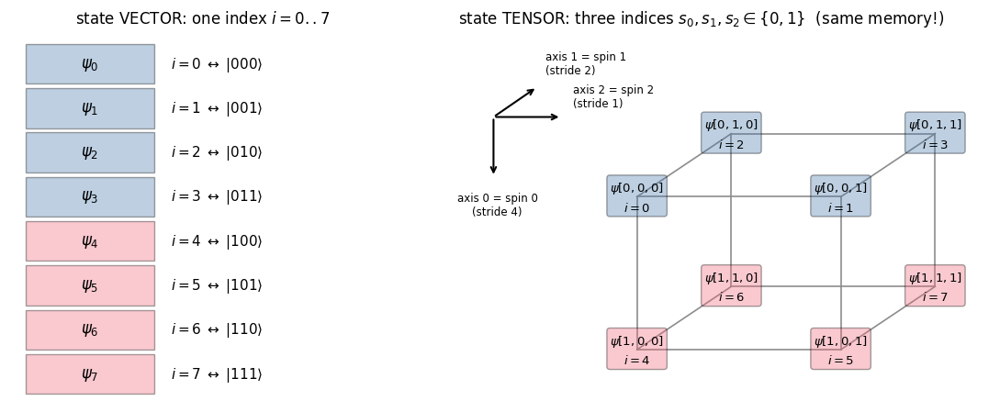
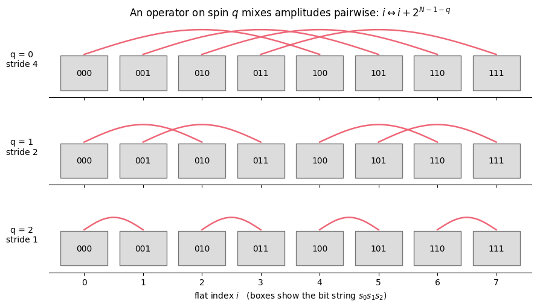
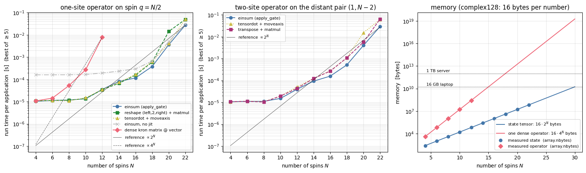
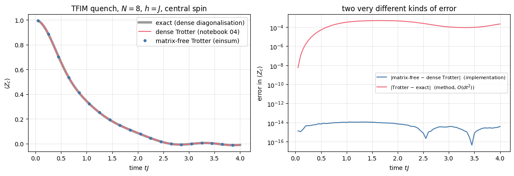
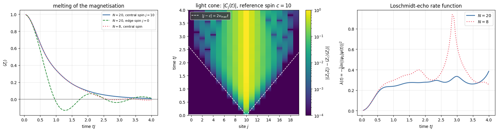
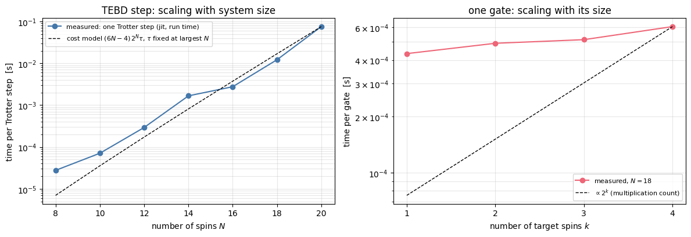

Quantum Many-Body Simulation — Chapter 3 — The matrix-free engine
1. Introduction and motivation
In the two previous notebooks we did many-body quantum mechanics the textbook way. A chain of \(N\) spins-1/2 lives in a Hilbert space of dimension \(2^N\); an operator that acts on a single spin \(q\) was written as a Kronecker product
a matrix with \(2^N\times 2^N = 4^N\) entries, and the Hamiltonian and the Trotter gates were sums and products of such matrices. That approach is perfectly correct, and it collapses at \(N\approx 12\)–\(14\): for \(N=14\) a single dense operator in double precision occupies \(16\cdot 4^{14}\) bytes \(\approx 4.3\) GB, and for \(N=20\) it would need \(17.6\)terabytes.
Look again at the formula above. Almost all of that gigantic matrix is identity. The only non-trivial information in \(M_q\) are the four numbers of the \(2\times2\) matrix \(M\) and the integer\(q\). We can act with \(M_q\) on a state using only those, after a change of viewpoint:
a state of \(N\) spins is an array with \(N\) indices, each running over 2 values — a rank-\(N\) tensor \(\psi[s_0,s_1,\dots,s_{N-1}]\) — and an operator on spin \(q\) is a small matrix contracted with index \(q\).
This is what matrix-free means: the operator exists only through its action on a state; the \(2^N\times2^N\) matrix is never formed. Memory drops from \(O(4^N)\) to \(O(2^N)\) and the work per operator from \(O(4^N)\) to \(O(2^k\,2^N)\) for an operator on \(k\) spins. On a 16 GB laptop this moves the wall from \(N\approx 14\) to \(N\approx 28\) (§6), and it is how state-vector simulators for spin chains, cold atoms or quantum computers work (a massively parallel example: De Raedt et al. 2007). Everything in the rest of this course is built on the single function apply_gate that we derive in this notebook.
Experiments with Rydberg-atom arrays, trapped ions and superconducting circuits today control \(N = 20\)–\(100\) two-level systems and watch their quantum dynamics. To interpret such experiments, to benchmark quantum hardware, or to explore many-body physics on your own, one needs exact numerics at the largest \(N\) that can be afforded.
Road map
State vector → tensor (§2): reshape, “axis \(q\) = spin \(q\)”, the flat-index formula.
One-site operators (§3): derive \(\psi'[..a..]=\sum_b M[a,b]\,\psi[..b..]\), write the einsum strings by hand for \(N=3\) and check every one against the Kronecker matrix of notebook 03.
Two-site operators (§4): reshape \(4\times4\to(2,2,2,2)\), which index is which, neighbours, distant sites, reversed order.
The general apply_gate (§5): building the einsum string programmatically, line by line; the production version.
Alternative implementations and a benchmark (§6): einsum vs reshape+matmul vs tensordot vs dense, time and memory vs \(N\).
Matrix-free \(H|\psi\rangle\) (§7): a Hamiltonian is a list of local terms; validation against the dense Hamiltonian.
The first matrix-free time evolution (§8): Trotter gates \(e^{-ih\,dt}\) applied by einsum (this is the TEBD algorithm on a state vector), jit + lax.scan, machine-precision agreement with the dense Trotter code, then a quench of \(N=20\) spins.
Cost model\(O(2^k 2^N)\) confronted with measurements (§9).
What you will learn
Physics
why local operators never need the full Hilbert-space matrix, and what “locality” means for an algorithm;
the quench dynamics of the transverse-field Ising chain for 20 spins: decay of the magnetisation, a light cone of correlations, the Loschmidt echo.
Numerical methods
the tensor form of a many-body state and the C-ordered flat-index formula;
operators as index contractions; conventions for two-site operators (row/column, first qubit = left Kronecker factor);
matrix-free matrix–vector products \(H|\psi\rangle\) and Trotterised evolution; the cost model \(O(2^k2^N)\) time, \(O(2^N)\) memory.
Implementation practice
constructing einsum strings by program; static (Python) versus traced (JAX) arguments;
validating every new primitive against an independent brute-force reference on small \(N\);
benchmarking: compile time vs run time, block_until_ready, best-of-several, scaling rather than absolute numbers;
jax.jit, jax.vmap and jax.lax.scan at work in a real simulation.
The few dense helpers we need from notebooks 03–04 are re-defined below.
Configuration
Every notebook of this course starts with the same cell. Choose where to run (DEVICE) and the floating-point precision (PRECISION): "double" = float64/complex128 (default, recommended for physics), "single" = float32/complex64 (half the memory, faster on consumer GPUs, but watch the round-off). All code below derives its dtypes from RDTYPE/CDTYPE and its check tolerances from TOL, so nothing else needs to change.
Code
# ==============================================================================# CONFIGURATION -- adapt to your hardware, then run the notebook top to bottom# ==============================================================================DEVICE ="auto"# "auto": use a GPU if JAX finds one, else CPU | "cpu" | "gpu"PRECISION ="double"# "double": float64/complex128 | "single": float32/complex64import osif DEVICE =="cpu": os.environ["JAX_PLATFORMS"] ="cpu"# must be set BEFORE jax is importedimport stringfrom functools import partialimport mathimport numpy as npimport jaximport jax.numpy as jnpfrom jax import lax# Precision is configurable: "double" = float64/complex128 (default; needed for long time evolutions and# tight validation), "single" = float32/complex64 (half the memory, faster on consumer GPUs).# In a notebook PRECISION is defined in the Configuration cell; for this module use the env var QE_PRECISION.PRECISION =globals().get("PRECISION", os.environ.get("QE_PRECISION", "double"))jax.config.update("jax_enable_x64", PRECISION =="double")RDTYPE = jnp.float64 if PRECISION =="double"else jnp.float32 # real dtypeCDTYPE = jnp.complex128 if PRECISION =="double"else jnp.complex64 # complex dtype of all states/operatorsTOL =1e-10if PRECISION =="double"else1e-4# tolerance for sanity checks (asserts)_LETTERS = string.ascii_letters # the 52 einsum index labels a-z, A-Zimport timeimport matplotlib.pyplot as pltif DEVICE =="gpu"and jax.default_backend() =="cpu":print("WARNING: DEVICE='gpu' requested but JAX found no GPU -- running on CPU.")print(f"JAX {jax.__version__} | backend: {jax.default_backend()} | devices: {jax.devices()}")print(f"precision: {PRECISION} -> real {RDTYPE.__name__}, complex {CDTYPE.__name__}, check tolerance TOL={TOL:g}")
JAX 0.11.0 | backend: cpu | devices: [CpuDevice(id=0)]
precision: double -> real float64, complex complex128, check tolerance TOL=1e-10
2. A state vector is a rank-\(N\) tensor
2.1 Notation and conventions
symbol
meaning
\(N\)
number of spins-1/2 (qubits), labelled \(q = 0,1,\dots,N-1\) from left to right
\(s_q\in\{0,1\}\)
basis label of spin \(q\): \(\lvert0\rangle=(1,0)^T\) is “up” (\(Z=+1\)), \(\lvert1\rangle=(0,1)^T\) is “down” (\(Z=-1\))
\(\lvert s_0s_1\dots s_{N-1}\rangle\)
product basis state \(\lvert s_0\rangle\otimes\lvert s_1\rangle\otimes\dots\otimes\lvert s_{N-1}\rangle\)
\(\psi_i\)
component \(i=0,\dots,2^N-1\) of the state vector (notebook 03)
\(\psi[s_0,\dots,s_{N-1}]\)
the same number, stored in a tensor of shape \((2,2,\dots,2)\)
\(X,Y,Z\)
Pauli matrices; Hamiltonians are written with Pauli matrices (not spin-1/2 operators \(S=\sigma/2\))
The amplitudes carry \(N\) binary indices — they are an array with \(N\) axes. In notebook 03 we nevertheless stored them in a one-dimensional vector, numbering the basis states by reading the bit string as a binary number (the bit representation of spin basis states standard in exact diagonalisation, see Sandvik 2010, Sec. 4.1.1, who stores spin \(i\) in bit \(i\), i.e. the reverse order):
\[ i \;=\; s_0\,2^{N-1}+s_1\,2^{N-2}+\dots+s_{N-1}\,2^{0}\;=\;\sum_{q=0}^{N-1}s_q\,2^{\,N-1-q}. \tag{1} \]
Spin 0 is the most significant bit, because spin 0 is the left Kronecker factor and in \(u\otimes v\) the index of the left factor varies slowest.
Now the key observation. Equation (1) is exactly the rule by which NumPy/JAX lay out a multi-dimensional array in memory (“C order” or “row-major”: the last index runs fastest, see notebook 02). Therefore
without moving a single number in memory. reshape only changes how we address the \(2^N\) amplitudes: with one big index \(i\), or with \(N\) small ones. Axis \(q\) of the tensor is spin \(q\).
We first re-create the small dense toolbox of notebook 03, which will serve as the independent reference for everything we build.
Code
# ==============================================================================# STEP 0: the dense "textbook" toolbox from notebooks 03-04 (our reference)# ==============================================================================from functools importreduce# Pauli matrices; |0> = (1,0) is the +1 eigenstate of Z ("spin up")I2 = jnp.eye(2, dtype=CDTYPE)X = jnp.array([[0, 1], [1, 0]], dtype=CDTYPE)Y = jnp.array([[0, -1j], [1j, 0]], dtype=CDTYPE)Z = jnp.array([[1, 0], [0, -1]], dtype=CDTYPE)def site_operator(op, j, N):"""Dense 2^N x 2^N matrix of a single-site operator (the textbook construction of notebook 03). MATH op_j = 1 (x) ... (x) 1 (x) op (x) 1 (x) ... (x) 1 (op at position j, N factors) COST O(4^N) memory and time -- this is the wall we are about to remove. VALIDATION ONLY. """ factors = [op if q == j else I2 for q inrange(N)]returnreduce(jnp.kron, factors)def two_site_operator(h2, j, N):"""Dense matrix of a 4x4 operator on the NEIGHBOURING spins (j, j+1) (notebooks 03-04). MATH h_{j,j+1} = 1_{2^j} (x) h2 (x) 1_{2^(N-j-2)}; spin j is the LEFT Kronecker factor of h2. VALIDATION ONLY. """ left, right = jnp.eye(2** j, dtype=CDTYPE), jnp.eye(2** (N - j -2), dtype=CDTYPE)return jnp.kron(jnp.kron(left, jnp.asarray(h2, dtype=CDTYPE)), right)def random_state(key, N):"""Normalised random complex state VECTOR of length 2^N (complex Gaussian amplitudes). JAX randomness is explicit: the same `key` always gives the same state (reproducible notebooks); `jax.random.split` makes independent keys (see notebook 01). """ k_re, k_im = jax.random.split(key) v = jax.random.normal(k_re, (2** N,), dtype=RDTYPE) +1j* jax.random.normal(k_im, (2** N,), dtype=RDTYPE)return (v / jnp.linalg.norm(v)).astype(CDTYPE)def random_matrix(key, d):"""Random complex d x d matrix (neither Hermitian nor unitary): the most demanding test operator.""" k_re, k_im = jax.random.split(key)return (jax.random.normal(k_re, (d, d), dtype=RDTYPE) +1j* jax.random.normal(k_im, (d, d), dtype=RDTYPE)).astype(CDTYPE)def max_abs_diff(a, b):"""Largest element-wise deviation between two arrays of any (equal-size) shape: our error measure."""returnfloat(jnp.max(jnp.abs(jnp.ravel(a) - jnp.ravel(b))))key = jax.random.PRNGKey(2026) # master key of this notebook; split deterministically belowprint("site_operator(Z, 1, 3) has shape", site_operator(Z, 1, 3).shape, " two_site_operator(kron(Z,Z), 0, 3) has shape", two_site_operator(jnp.kron(Z, Z), 0, 3).shape)
site_operator(Z, 1, 3) has shape (8, 8) two_site_operator(kron(Z,Z), 0, 3) has shape (8, 8)
2.2 Reshape: from one big index to \(N\) small ones
Take \(N=3\). To see where every number goes we fill the vector with the recognisable “amplitudes” \(\psi_i = i\) (not normalised; the values only label the positions), reshape, and check Eq. (1) for all 8 basis states.
Code
# ==============================================================================# STEP 1: state vector -> rank-N tensor is a reshape (C order: last index fastest)# ==============================================================================N =3psi_vec = jnp.arange(2** N, dtype=RDTYPE).astype(CDTYPE) # psi_i = i : every amplitude "knows" its flat indexpsi_ten = psi_vec.reshape((2,) * N) # shape (2, 2, 2): axis q = spin qprint("vector shape:", psi_vec.shape, " tensor shape:", psi_ten.shape, "\n")print(" s0 s1 s2 | flat index i = 4 s0 + 2 s1 + s2 | psi_tensor[s0,s1,s2]")print(" ---------+---------------------------------+---------------------")for s0 inrange(2):for s1 inrange(2):for s2 inrange(2): i = s0 *2**2+ s1 *2**1+ s2 *2**0# Eq. (1) amp = psi_ten[s0, s1, s2]assertabs(amp - i) < TOL # tensor entry == vector entry number iprint(f" {s0}{s1}{s2} | {i} | {amp.real:.0f}")# NumPy knows Eq. (1) too:assert np.ravel_multi_index((1, 0, 1), (2, 2, 2)) ==5# (s0,s1,s2) -> iassert np.unravel_index(5, (2, 2, 2)) == (1, 0, 1) # i -> (s0,s1,s2)# and going back is again just a reshape:assert max_abs_diff(psi_ten.reshape(-1), psi_vec) < TOLprint("\nCHECKPOINT passed: psi_tensor[s0,s1,s2] == psi_vector[4 s0 + 2 s1 + s2] for all 8 basis states.")
CHECKPOINT passed: psi_tensor[s0,s1,s2] == psi_vector[4 s0 + 2 s1 + s2] for all 8 basis states.
The table is Eq. (1) at work: the entry stored at position \([s_0,s_1,s_2]\) of the tensor is the amplitude number \(4s_0+2s_1+s_2\) of the vector. The picture below shows the same thing geometrically: for \(N=3\) the tensor is a \(2\times2\times2\) cube whose corners are the 8 basis states; moving along axis \(q\) flips spin \(q\) and changes the flat index by the stride\(2^{N-1-q}\) (4, 2, 1 for \(q=0,1,2\)).
Code
# ==============================================================================# FIGURE: the same 8 amplitudes as a vector and as a 2x2x2 tensor# ==============================================================================fig, (axL, axR) = plt.subplots(1, 2, figsize=(11, 4.6), gridspec_kw={"width_ratios": [1, 1.5]})colors = {0: "#4477AA", 1: "#EE6677"} # colour = value of s0 (the most significant bit)# --- left: the vector, one box per flat index -----------------------------------------------for i inrange(8): bits =format(i, "03b") axL.add_patch(plt.Rectangle((0, 7- i), 1.6, 0.9, facecolor=colors[int(bits[0])], alpha=0.35, edgecolor="k")) axL.text(0.8, 7- i +0.45, rf"$\psi_{i}$", ha="center", va="center", fontsize=12) axL.text(1.8, 7- i +0.45, rf"$i={i}\;\leftrightarrow\;|{bits}\rangle$", ha="left", va="center", fontsize=11)axL.set_xlim(-0.2, 4.6); axL.set_ylim(-0.2, 8.2); axL.axis("off")axL.set_title("state VECTOR: one index $i=0..7$")# --- right: the cube; corner (s0,s1,s2) drawn in an oblique projection ----------------------def corner(s0, s1, s2):"""2D drawing position of tensor entry [s0,s1,s2]: axis 2 -> right, axis 0 -> down, axis 1 -> into the page."""return np.array([2.7* s2 +1.25* s1, -2.3* s0 +0.95* s1])for s0 inrange(2):for s1 inrange(2):for s2 inrange(2): p = corner(s0, s1, s2)for axis, nb inenumerate([(1, s1, s2), (s0, 1, s2), (s0, s1, 1)]): # edges towards larger indexif (s0, s1, s2)[axis] ==0: pn = corner(*nb) axR.plot([p[0], pn[0]], [p[1], pn[1]], color="0.55", lw=1.2, zorder=1)for s0 inrange(2):for s1 inrange(2):for s2 inrange(2): p = corner(s0, s1, s2) i =4* s0 +2* s1 + s2 axR.text(p[0], p[1], rf"$\psi[{s0},{s1},{s2}]$"+f"\n$i={i}$", ha="center", va="center", fontsize=9.5, zorder=3, linespacing=1.5, bbox=dict(boxstyle="round,pad=0.25", facecolor=colors[s0], alpha=0.35, edgecolor="k"))o = np.array([-1.9, 1.2]) # little coordinate framefor d, lab in [((0.0, -1.0), "axis 0 = spin 0\n(stride 4)"), ((0.64, 0.5), "axis 1 = spin 1\n(stride 2)"), ((1.0, 0.0), "axis 2 = spin 2\n(stride 1)")]: d = np.array(d) axR.annotate("", xy=o +0.9* d, xytext=o, arrowprops=dict(arrowstyle="->", lw=1.5)) axR.text(*(o +1.0* d + np.array([0.05, -0.12if d[1] <0else0.12])), lab, fontsize=8.5, ha="left"if d[0] >0else"center", va="top"if d[1] <0else"bottom")axR.set_xlim(-3.0, 4.7); axR.set_ylim(-3.1, 2.5); axR.axis("off")axR.set_title("state TENSOR: three indices $s_0,s_1,s_2\\in\\{0,1\\}$ (same memory!)")plt.tight_layout(); plt.show()

Reading the figure. Left: the vector of notebook 03, one box per flat index. Right: the same eight numbers at the corners of a cube. Blue corners have \(s_0=0\) (first half of the vector), red corners \(s_0=1\) (second half): axis 0 has the largest stride. Neighbouring corners along axis 2 are neighbours in the vector (stride 1).
Numerical practice.reshape is free: no data are copied, only the shape and strides attached to the memory block change. We can therefore hop between the two pictures whenever convenient — the vector picture for linear algebra (vdot, norms, dense reference checks), the tensor picture for applying local operators.
Common pitfall. Some books and libraries use the opposite, “little-endian” convention (spin 0 = least significant bit). Nothing physical depends on it, but mixing conventions silently mirrors your chain. In this course: spin \(q\) = tensor axis \(q\) = \(q\)-th factor of the Kronecker product, counted from the left.
A product state makes the tensor structure explicit. For \(|\psi\rangle=|u\rangle\otimes|v\rangle\otimes|w\rangle\) the amplitudes are \(\psi[s_0,s_1,s_2]=u[s_0]\,v[s_1]\,w[s_2]\), an outer product — in einsum language "a,b,c->abc" (no index is summed). Let us confirm that this equals the Kronecker product of notebook 03 once reshaped.
Code
# ==============================================================================# CHECKPOINT: product state as outer product (tensor) == kron (vector)# ==============================================================================k_u, k_v, k_w, key = jax.random.split(key, 4)u, v, w = (random_state(k, 1) for k in (k_u, k_v, k_w)) # three random single-spin states (length 2)psi_kron = jnp.kron(jnp.kron(u, v), w) # notebook 03: vector of length 8psi_outer = jnp.einsum("a,b,c->abc", u, v, w) # tensor of shape (2,2,2)err = max_abs_diff(psi_outer.reshape(-1), psi_kron)print(f"| einsum('a,b,c->abc') - kron(kron(u,v),w) |_max = {err:.2e}")assert err < TOL
The error is exactly zero (both routes perform the same multiplications): the Kronecker product is the outer product followed by a reshape, with the left factor on the first axis.
3. One-site operators: contraction with axis \(q\)
3.1 Derivation
Let \(M\) be a \(2\times2\) matrix acting on spin \(q\), i.e. the operator \(M_q=\mathbb 1\otimes\dots\otimes M\otimes\dots\otimes\mathbb 1\). Its matrix elements between product basis states factorise — every identity contributes a Kronecker delta:
Acting on \(|\psi\rangle\) means \(\psi'[s]=\sum_{s'}\langle s|M_q|s'\rangle\,\psi[s']\). The \(N-1\) deltas eat \(N-1\) of the \(N\) sums and only the sum over \(s'_q\) survives:
In words: all other indices are spectators; for every fixed value of the spectators, the two numbers \(\psi[\dots,0,\dots]\) and \(\psi[\dots,1,\dots]\) form a little 2-component vector which is multiplied by the \(2\times2\) matrix \(M\). There are \(2^{N-1}\) such pairs, so the whole operation costs \(2^{N-1}\times 4 = 2\cdot2^N\) multiplications — instead of the \(4^N\) of a dense matrix–vector product; the identities cost nothing.
3.2 Hand-written einsum strings for \(N=3\)
Equation (2) is a sum over one repeated index, which is precisely what einsum executes (notebook 02). Label the axes of \(\psi\) with the letters a b c. We adopt the mnemonic “the new index is the capital letter of the old one”:
target
formula
einsum string
\(q=0\)
\(\psi'[A,b,c]=\sum_a M[A,a]\,\psi[a,b,c]\)
"Aa,abc->Abc"
\(q=1\)
\(\psi'[a,B,c]=\sum_b M[B,b]\,\psi[a,b,c]\)
"Bb,abc->aBc"
\(q=2\)
\(\psi'[a,b,C]=\sum_c M[C,c]\,\psi[a,b,c]\)
"Cc,abc->abC"
How to read "Bb,abc->aBc": the operator has indices B (row = output) and b (column = input); the letter b appears in both operands and not in the result, so it is summed; a and c pass through untouched; the result has B sitting where b used to be — on axis 1. We now verify all three strings against the dense operator of notebook 03, using a random complex matrix \(M\) (not Hermitian, not unitary — Eq. (2) does not care) and a random state.
Code
# ==============================================================================# STEP 2: single-site operator on N=3 spins -- hand-written einsum vs dense Kronecker matrix# ==============================================================================N =3k_M, k_psi, key = jax.random.split(key, 3)M = random_matrix(k_M, 2) # generic complex 2x2 operatorpsi_vec = random_state(k_psi, N) # vector picture (length 8)psi = psi_vec.reshape((2,) * N) # tensor picture (2,2,2)hand_strings = {0: "Aa,abc->Abc", # new index A replaces a (axis 0)1: "Bb,abc->aBc", # new index B replaces b (axis 1)2: "Cc,abc->abC"} # new index C replaces c (axis 2)for q, sub in hand_strings.items(): out_tensor = jnp.einsum(sub, M, psi) # matrix-free: 2*2^N multiplications out_dense = site_operator(M, q, N) @ psi_vec # textbook: 4^N multiplications err = max_abs_diff(out_tensor.reshape(-1), out_dense)print(f"q={q}: einsum('{sub}', M, psi) vs (kron-matrix) @ psi_vec max|diff| = {err:.2e}")assert err < TOLprint("CHECKPOINT passed: the contraction with axis q IS the action of 1 x..x M x..x 1.")
q=0: einsum('Aa,abc->Abc', M, psi) vs (kron-matrix) @ psi_vec max|diff| = 0.00e+00
q=1: einsum('Bb,abc->aBc', M, psi) vs (kron-matrix) @ psi_vec max|diff| = 0.00e+00
q=2: einsum('Cc,abc->abC', M, psi) vs (kron-matrix) @ psi_vec max|diff| = 0.00e+00
CHECKPOINT passed: the contraction with axis q IS the action of 1 x..x M x..x 1.
All three agree to round-off — here the printed differences are even exactly \(0\) (with only two terms in each sum there is no room for the two routes to round differently). The einsum route contains no identity matrices, no kron, no \(8\times8\) matrix. The position of the operator in the chain is encoded only in the einsum string.
3.3 What the contraction does to the flat vector
Here is Eq. (2) once more as an explicit loop over the flat vector. Flipping spin \(q\) changes the flat index by the stride \(2^{N-1-q}\), so amplitude \(i\) is combined with exactly one partner, \(i\pm2^{N-1-q}\):
Code
# ==============================================================================# STEP 3: the same operation as an explicit (slow) Python loop over the flat vector# ==============================================================================def apply_one_site_loop(psi_vec, M, q, N):"""Eq. (2) written with for-loops on the FLAT vector -- for understanding only. MATH out[i] = M[s_q, 0] * psi[i with bit q = 0] + M[s_q, 1] * psi[i with bit q = 1] IMPLEMENTATION bit q of i is (i >> (N-1-q)) & 1; flipping it changes i by stride = 2^(N-1-q). COST 2 multiplications per output amplitude -> 2 * 2^N in total. """ psi_np, M_np = np.asarray(psi_vec), np.asarray(M) out = np.zeros_like(psi_np) stride =2** (N -1- q)for i inrange(2** N): s_q = (i >> (N -1- q)) &1# value of spin q in basis state i i0 = i - s_q * stride # partner index with spin q = 0 i1 = i0 + stride # partner index with spin q = 1 out[i] = M_np[s_q, 0] * psi_np[i0] + M_np[s_q, 1] * psi_np[i1]return outfor q inrange(N): err = max_abs_diff(apply_one_site_loop(psi_vec, M, q, N), jnp.einsum(hand_strings[q], M, psi))print(f"q={q}: explicit loop vs einsum max|diff| = {err:.2e}")assert err < TOL# ------------------------------------------------------------------------------# FIGURE: which amplitudes are mixed by an operator on spin q (N=3)# ------------------------------------------------------------------------------fig, axes = plt.subplots(3, 1, figsize=(9, 5.2), sharex=True)for q, ax inenumerate(axes): stride =2** (N -1- q)for i inrange(8): ax.add_patch(plt.Rectangle((i -0.4, -0.25), 0.8, 0.5, facecolor="#BBBBBB", alpha=0.5, edgecolor="k")) ax.text(i, 0, format(i, "03b"), ha="center", va="center", fontsize=10)for i inrange(8):if (i >> (N -1- q)) &1==0: # draw each pair once xs = np.linspace(i, i + stride, 50) ax.plot(xs, 0.27+0.18* stride **0.5* np.sin(np.pi * (xs - i) / stride), color="#EE6677", lw=1.8) ax.set_ylim(-0.35, 0.75); ax.set_yticks([]); ax.set_xlim(-0.6, 7.6) ax.set_ylabel(f"q = {q}\nstride {stride}", rotation=0, labelpad=32, va="center")for side in ("top", "right", "left"): ax.spines[side].set_visible(False)axes[-1].set_xticks(range(8)); axes[-1].set_xlabel("flat index $i$ (boxes show the bit string $s_0s_1s_2$)")axes[0].set_title("An operator on spin $q$ mixes amplitudes pairwise: $i \\leftrightarrow i+2^{N-1-q}$")plt.tight_layout(); plt.show()
q=0: explicit loop vs einsum max|diff| = 5.72e-17
q=1: explicit loop vs einsum max|diff| = 1.11e-16
q=2: explicit loop vs einsum max|diff| = 2.22e-16

Reading the figure. Each arc is one independent \(2\times2\) matrix–vector product. An operator on the last spin mixes neighbouring amplitudes (stride 1); an operator on spin 0 mixes the first half of the vector with the second half (stride 4). For every \(q\) there are \(2^{N-1}=4\) arcs — the work does not depend on where the operator acts. The einsum performs all arcs at once, in compiled code; our Python loop does the same arithmetic slowly and serves only as an explicit reading of Eq. (2).
Physics insight. “Local operator” has a precise computational meaning: it couples each basis state to only \(2^k\) others (\(k\) = number of spins it touches), not to all \(2^N\). A dense matrix stores and multiplies \(2^N-2^k\) zeros per row. Matrix-free simulation skips them.
4. Two-site operators
Interactions (\(Z_iZ_j\)), entangling gates (CNOT) and Trotter factors \(e^{-i h_{ij}dt}\) act on two spins. They arrive as \(4\times4\) matrices in the basis \(|00\rangle,|01\rangle,|10\rangle,|11\rangle\) of the pair. To contract them with two axes of \(\psi\) we must first give them two row indices and two column indices.
4.1 Reshaping \(4\times4\to(2,2,2,2)\): the index convention
Apply Eq. (1) to the pair: the row number is \(r=2a_1+a_2\) and the column number is \(c=2b_1+b_2\), where \(a_1,b_1\) belong to the first spin of the pair and \(a_2,b_2\) to the second. C-ordered reshape undoes exactly this packing:
indices 0,1 of the rank-4 tensor = outputs (row) of first and second spin; indices 2,3 = inputs (column) of first and second spin;
the “first” spin is the left factor of the Kronecker product: for \(U_4=M\otimes K\) we have \((M\otimes K)[2a_1+a_2,2b_1+b_2]=M[a_1,b_1]\,K[a_2,b_2]\), hence \(U[a_1,a_2,b_1,b_2]=M[a_1,b_1]K[a_2,b_2]\).
Let us check both statements numerically, and look at the CNOT gate through these glasses.
Code
# ==============================================================================# STEP 4: a 4x4 matrix as a rank-4 tensor U[a1, a2, b1, b2]# ==============================================================================k_K, key = jax.random.split(key)K = random_matrix(k_K, 2)U4 = jnp.kron(M, K) # product operator "M on the first spin, K on the second"U = U4.reshape(2, 2, 2, 2) # U[a1, a2, b1, b2]# (i) element-by-element: U[a1,a2,b1,b2] == M[a1,b1] * K[a2,b2]for a1, a2, b1, b2 in np.ndindex(2, 2, 2, 2):assertabs(U[a1, a2, b1, b2] - M[a1, b1] * K[a2, b2]) < TOLassertabs(U[a1, a2, b1, b2] - U4[2* a1 + a2, 2* b1 + b2]) < TOL# (ii) the same statement as ONE einsum (the Kronecker product of notebook 02: "ab,cd->acbd" + reshape)err = max_abs_diff(jnp.einsum("ac,bd->abcd", M, K), U)print(f"kron(M,K).reshape(2,2,2,2) == einsum('ac,bd->abcd', M, K): max|diff| = {err:.2e}")assert err < TOL# (iii) CNOT: first spin = control, second = target.CNOT = jnp.array([[1, 0, 0, 0], [0, 1, 0, 0], [0, 0, 0, 1], [0, 0, 1, 0]], dtype=CDTYPE)C = CNOT.reshape(2, 2, 2, 2)print("\nCNOT[a1=0, :, b1=0, :] (control stays 0) =\n", np.asarray(C[0, :, 0, :].real))print("CNOT[a1=1, :, b1=1, :] (control stays 1) =\n", np.asarray(C[1, :, 1, :].real))print("CNOT[a1=0, :, b1=1, :] (control flips) =\n", np.asarray(C[0, :, 1, :].real))
The slices read like the definition of the gate: if the control (first spin) is \(0\) the target sees the identity, if it is \(1\) the target sees \(X\), and there is no element that changes the control. The rank-4 form makes the roles of the four indices visible, which the flat \(4\times4\) table hides.
4.2 The contraction, and three hand-written strings for \(N=4\)
Repeating the derivation of §3.1 with two non-trivial factors gives, for an operator acting on spins \((q_1,q_2)\),
where \(a_1,b_1\) sit on axis \(q_1\) and \(a_2,b_2\) on axis \(q_2\). Nothing in Eq. (3) requires the two axes to be adjacent. For \(N=4\) with axes a b c d, and the same capital-letter mnemonic:
case
\((q_1,q_2)\)
einsum string
comment
neighbours
\((1,2)\)
"BCbc,abcd->aBCd"
\(U\) carries (new \(q_1\), new \(q_2\), old \(q_1\), old \(q_2\))
distant
\((0,3)\)
"ADad,abcd->AbcD"
same cost — no SWAP gates, no identities in between
reversed
\((2,0)\)
"CAca,abcd->AbCd"
first spin of \(U\) is site 2, second is site 0
Look carefully at the third row. The output is always written in the axis order of \(\psi\) (AbCd: axis 0 first) — the state tensor never changes its layout. What changes is the order of letters on the operator: its first row/column indices are wired to axis 2 (C,c), its second ones to axis 0 (A,a). The list (q1, q2) is thus a wiring instruction: “connect the first spin of \(U\) to site \(q_1\) and the second to site \(q_2\)”.
4.3 An independent dense reference for two-site operators
To test the strings we need the dense \(2^N\times2^N\) matrix of “\(U_4\) acting on sites \((q_1,q_2)\)” built without any einsum on the state. For neighbours \((j,j+1)\) notebook 03 gave us two_site_operator(h2, j, N)\(=\mathbb 1\otimes h_2\otimes\mathbb 1\), but that does not cover distant or reversed pairs. For a product operator \(M\otimes K\) this is site_operator(M,q1) @ site_operator(K,q2). A general \(U_4\) is not a product, but it is a sum of products: the 16 matrices \(\sigma^\alpha\otimes\sigma^\beta\) (\(\sigma^0=\mathbb 1\), \(\sigma^{1,2,3}=X,Y,Z\)) form an orthogonal basis of all \(4\times4\) matrices with respect to the trace inner product, \(\mathrm{Tr}[(\sigma^\alpha\otimes\sigma^\beta)^\dagger(\sigma^\gamma\otimes\sigma^\delta)]=4\,\delta_{\alpha\gamma}\delta_{\beta\delta}\), so
(Pauli matrices are Hermitian, so the dagger can be dropped.) This uses only kron chains — exactly the technology of notebook 03.
Code
# ==============================================================================# STEP 5: dense reference for a two-site operator on ARBITRARY sites (validation only)# ==============================================================================PAULIS = [I2, X, Y, Z]def two_site_operator_any(U4, q1, q2, N):"""Dense 2^N x 2^N matrix of the 4x4 operator U4 acting on sites (q1, q2); q1 = FIRST spin of U4. MATH U4 = sum_{al,be} c[al,be] sigma^al (x) sigma^be, c[al,be] = Tr[(sigma^al (x) sigma^be) U4] / 4 U_(q1,q2) = sum_{al,be} c[al,be] * site_operator(sigma^al, q1) @ site_operator(sigma^be, q2) Works for neighbours, distant sites and q1 > q2 alike. COST O(4^N): VALIDATION ONLY. """ ops1 = [site_operator(P, q1, N) for P in PAULIS] # sigma^al on site q1 (dense kron chains) ops2 = [site_operator(P, q2, N) for P in PAULIS] # sigma^be on site q2 dense = jnp.zeros((2** N, 2** N), dtype=CDTYPE)for al, Pa inenumerate(PAULIS):for be, Pb inenumerate(PAULIS): c = jnp.trace(jnp.kron(Pa, Pb) @ U4) /4.0# expansion coefficient c[al,be] dense = dense + c * (ops1[al] @ ops2[be])return dense# sanity check of the reference itself: on neighbours (q, q+1) it must equal 1 x ... x U4 x ... x 1k_U, key = jax.random.split(key)U4 = random_matrix(k_U, 4) # generic (non-product, non-symmetric) two-site operatorref = two_site_operator(U4, 1, 4) # kron(1, U4, 1): the neighbour construction of notebook 03err = max_abs_diff(two_site_operator_any(U4, 1, 2, 4), ref)print(f"Pauli-decomposition reference vs kron(1, U4, 1) on sites (1,2): max|diff| = {err:.2e}")assert err < TOL
Pauli-decomposition reference vs kron(1, U4, 1) on sites (1,2): max|diff| = 2.48e-16
Code
# ==============================================================================# STEP 6: two-site operator on N=4 spins -- three hand-written strings vs dense reference# ==============================================================================N =4k_psi, key = jax.random.split(key)psi_vec = random_state(k_psi, N)psi = psi_vec.reshape((2,) * N)U = U4.reshape(2, 2, 2, 2) # random NON-symmetric 4x4 operator -> U[a1,a2,b1,b2]hand_strings_2 = {(1, 2): "BCbc,abcd->aBCd", # neighbours (0, 3): "ADad,abcd->AbcD", # distant sites (2, 0): "CAca,abcd->AbCd"} # reversed order: first spin of U = site 2, second = site 0for (q1, q2), sub in hand_strings_2.items(): out_tensor = jnp.einsum(sub, U, psi) out_dense = two_site_operator_any(U4, q1, q2, N) @ psi_vec err = max_abs_diff(out_tensor.reshape(-1), out_dense)print(f"sites ({q1},{q2}): einsum('{sub}') vs dense max|diff| = {err:.2e}")assert err < TOL# The order matters for a non-symmetric operator: (2,0) and (0,2) are DIFFERENT operators ...out_20 = jnp.einsum("CAca,abcd->AbCd", U, psi)out_02 = jnp.einsum("ACac,abcd->AbCd", U, psi)print(f"\n| U on (2,0) - U on (0,2) |_max = {max_abs_diff(out_20, out_02):.3f} (different operators)")# ... related by exchanging the roles of the two spins in U: U[a1,a2,b1,b2] -> U[a2,a1,b2,b1] (= SWAP U4 SWAP)U_swapped = jnp.transpose(U, (1, 0, 3, 2))err = max_abs_diff(out_20, jnp.einsum("ACac,abcd->AbCd", U_swapped, psi))print(f"| U on (2,0) - (SWAP U SWAP) on (0,2) |_max = {err:.2e}")assert err < TOL# A concrete example: CNOT with control = site 2, target = site 0, acting on |0010> must give |1010>basis_0010 = jnp.zeros((2,) * N, dtype=CDTYPE).at[0, 0, 1, 0].set(1.0)out = jnp.einsum("CAca,abcd->AbCd", CNOT.reshape(2, 2, 2, 2), basis_0010)print("\nCNOT(control=2, target=0)|0010> has its only non-zero amplitude at index", tuple(int(x) for x in jnp.argwhere(jnp.abs(out) >0.5)[0]))assertabs(out[1, 0, 1, 0] -1.0) < TOL
sites (1,2): einsum('BCbc,abcd->aBCd') vs dense max|diff| = 2.48e-16
sites (0,3): einsum('ADad,abcd->AbcD') vs dense max|diff| = 2.48e-16
sites (2,0): einsum('CAca,abcd->AbCd') vs dense max|diff| = 2.22e-16
| U on (2,0) - U on (0,2) |_max = 2.041 (different operators)
| U on (2,0) - (SWAP U SWAP) on (0,2) |_max = 0.00e+00
CNOT(control=2, target=0)|0010> has its only non-zero amplitude at index (1, 0, 1, 0)
All three strings reproduce the dense reference to round-off. The experiment with the order shows that \((2,0)\) and \((0,2)\) differ by an \(O(1)\) amount for a generic \(U_4\) and coincide once the operator’s own two spins are exchanged (\(U[a_1,a_2,b_1,b_2]\to U[a_2,a_1,b_2,b_1]\), i.e. \(\mathrm{SWAP}\,U_4\,\mathrm{SWAP}\)). For symmetric operators such as \(Z\otimes Z\) or the Heisenberg coupling the order is irrelevant; for CNOT it decides which spin is the control.
Common pitfall. Writing the output as "...->CbAd" for the reversed pair. The output labels must follow the axis order of \(\psi\); otherwise you silently permute the spins of your state in addition to applying the gate. Rule of thumb: take the string of \(\psi\) and replace, in place, each target letter by its new letter.
Physics insight. A distant pair costs exactly as much as a neighbouring pair. Long-range interactions (dipolar \(1/r^3\) couplings of Rydberg atoms, all-to-all couplings of trapped ions) are therefore no harder for a state-vector simulator than nearest-neighbour ones — in contrast to matrix-product-state methods (notebook 18, Chapter 7), which rely on locality in space.
5. The general apply_gate: building the string by program
Writing strings by hand does not scale. Following the recipe of §4.2 we now generate them for any number of spins \(n\) and any tuple of targets (notebook 02 showed how einsum strings can be assembled with ordinary Python string operations). Four lines:
inp: label the axes of \(\psi\) with the first \(n\) letters of the alphabet;
new: take the next \(k\)unused letters — one fresh (output) label per target;
out: copy inp and replace, in place, the letter of each target by its fresh letter;
operator labels = (fresh letters in target order) + (old letters in target order) — the pattern \(U[a_1,a_2,b_1,b_2]\) of Eq. (3).
The Configuration cell defined _LETTERS = string.ascii_letters (a…zA…Z, 52 labels). Instead of “capital = new” (which runs out of steam when \(n>26\)) the program simply takes the next free letters; names of summation indices are arbitrary.
Code
# ==============================================================================# STEP 7: programmatic construction of the einsum string, line by line# ==============================================================================def gate_einsum_string(n, qubits, verbose=False):"""Einsum string for a k-site operator acting on the axes `qubits` of a rank-n tensor. MATH psi'[.., a_1, .., a_k, ..] = sum_{b_1..b_k} U[a_1..a_k, b_1..b_k] psi[.., b_1, .., b_k, ..] (Eq. 3) IMPLEMENTATION pure Python string manipulation; `qubits` are ordinary ints (known before any JAX tracing). """ k =len(qubits) inp =list(_LETTERS[:n]) # 1. labels of psi's axes: ['a','b','c',...] new = _LETTERS[n:n + k] # 2. k fresh labels for the outputs: the letters right after inp out = inp.copy() # 3. output = input ...for a, q inzip(new, qubits): out[q] = a # ... with target letters replaced IN PLACE op ="".join(new) +"".join(inp[q] for q in qubits) # 4. U[new_1..new_k, old_1..old_k] sub =f"{op},{''.join(inp)}->{''.join(out)}"if verbose:print(f" n={n}, qubits={tuple(qubits)}")print(f" 1. inp = {''.join(inp)}")print(f" 2. new = {new}")print(f" 3. out = {''.join(out)}")print(f" 4. op = {op}")print(f" => '{sub}'")return subfor n, qubits in [(3, (1,)), (4, (1, 2)), (4, (0, 3)), (4, (2, 0)), (6, (4, 1, 3))]: gate_einsum_string(n, qubits, verbose=True)
n=3, qubits=(1,)
1. inp = abc
2. new = d
3. out = adc
4. op = db
=> 'db,abc->adc'
n=4, qubits=(1, 2)
1. inp = abcd
2. new = ef
3. out = aefd
4. op = efbc
=> 'efbc,abcd->aefd'
n=4, qubits=(0, 3)
1. inp = abcd
2. new = ef
3. out = ebcf
4. op = efad
=> 'efad,abcd->ebcf'
n=4, qubits=(2, 0)
1. inp = abcd
2. new = ef
3. out = fbed
4. op = efca
=> 'efca,abcd->fbed'
n=6, qubits=(4, 1, 3)
1. inp = abcdef
2. new = ghi
3. out = ahcigf
4. op = ghiebd
=> 'ghiebd,abcdef->ahcigf'
Compare with the hand-written strings: for \(n=4\), targets \((2,0)\), the program gives "efca,abcd->fbed" — the same wiring as our "CAca,abcd->AbCd" with the summation-free letters renamed (C→e, A→f). The last example is a three-site operator on sites \((4,1,3)\) of six spins: the recipe is not limited to \(k\le2\).
The function below is a first version of the gate routine. Two details deserve attention:
the operator may be passed as a \(2^k\times2^k\) matrix; we reshape it to \((2,)\times 2k\) inside (§4.1);
qubits are static Python integers: they determine the string, i.e. the structure of the computation, and must be known when JAX traces the function. The state and the matrix entries are ordinary (traced) arrays.
Code
# ==============================================================================# STEP 8: first version of the general gate routine + systematic validation# ==============================================================================def apply_gate_v0(psi, U, qubits):"""Apply the 2^k x 2^k operator U to the axes `qubits` of the rank-n tensor psi (first version). MATH Eq. (3); U is reshaped to U[a_1..a_k, b_1..b_k], first listed qubit = most significant bit of U. COST O(2^k 2^n) time, O(2^n) memory. """ k =len(qubits) U = jnp.asarray(U, dtype=psi.dtype).reshape((2,) * (2* k))return jnp.einsum(gate_einsum_string(psi.ndim, qubits), U, psi)# --- exhaustive test on N=5: every site, every ORDERED pair (neighbours, distant, reversed) ---------------------------N =5k_psi, key = jax.random.split(key)psi_vec = random_state(k_psi, N)psi = psi_vec.reshape((2,) * N)worst_1 =max(max_abs_diff(apply_gate_v0(psi, M, (q,)).reshape(-1), site_operator(M, q, N) @ psi_vec) for q inrange(N))worst_2 =max(max_abs_diff(apply_gate_v0(psi, U4, (q1, q2)).reshape(-1), two_site_operator_any(U4, q1, q2, N) @ psi_vec)for q1 inrange(N) for q2 inrange(N) if q1 != q2)print(f"one-site operator, all {N} sites : worst max|diff| = {worst_1:.2e}")print(f"two-site operator, all {N * (N -1)} ordered pairs : worst max|diff| = {worst_2:.2e}")assert worst_1 < TOL and worst_2 < TOL# --- a three-site operator on the contiguous block (1,2,3): dense reference is 1 (x) U8 (x) 1 -------------------------k_U8, key = jax.random.split(key)U8 = random_matrix(k_U8, 8)ref = jnp.kron(jnp.kron(I2, U8), I2) @ psi_vecerr = max_abs_diff(apply_gate_v0(psi, U8, (1, 2, 3)).reshape(-1), ref)print(f"three-site operator on (1,2,3), contiguous : max|diff| = {err:.2e}")assert err < TOL# --- and a NON-contiguous, NON-ordered placement (3,0,2). A dense reference for a GENERAL 8x8 operator would need the# three-site version of the Pauli trick (Exercise 4); for a PRODUCT operator A (x) B (x) C it is simply the product of# three Kronecker chains -- still no einsum anywhere on the reference side ---------------------------------------------k_A, k_B, k_C, key = jax.random.split(key, 4)A3, B3, C3 = (random_matrix(k, 2) for k in (k_A, k_B, k_C))U8_prod = jnp.kron(jnp.kron(A3, B3), C3) # first spin of U8_prod -> site 3, second -> site 0, third -> site 2ref_prod = site_operator(A3, 3, N) @ site_operator(B3, 0, N) @ site_operator(C3, 2, N) @ psi_vecerr_prod = max_abs_diff(apply_gate_v0(psi, U8_prod, (3, 0, 2)).reshape(-1), ref_prod)print(f"three-site product operator on (3,0,2) : max|diff| = {err_prod:.2e}")assert err_prod < TOLprint("CHECKPOINT passed: the generated strings are correct for k = 1, 2, 3.")
three-site operator on (1,2,3), contiguous : max|diff| = 0.00e+00
three-site product operator on (3,0,2) : max|diff| = 4.44e-16
CHECKPOINT passed: the generated strings are correct for k = 1, 2, 3.
Every one of the 5 single-site and 20 ordered two-site placements agrees with the dense Kronecker construction to \(\sim10^{-16}\), and so do a three-site operator on a contiguous block and a three-site product operator wired to the scrambled sites \((3,0,2)\) — the case that actually exercises the reordering logic. This is the level of evidence you should demand from any simulator primitive before building on it. (A dense reference for a general three-site operator on scrambled sites needs the \(k\)-fold Pauli expansion of §4.3; that is Exercise 4.)
5.1 The production version
Below is the engine’s apply_gate: our apply_gate_v0 with the string construction inlined. Its docstring collects the conventions derived above, and its example strings are the ones the generator produces.
Code
# ==============================================================================# Functions of quantum_engine.py derived in this notebook# ==============================================================================# ----------------------------------------------------------------------------# 2. THE core primitive: a k-qubit operator acting on a tensor through ONE einsum# ----------------------------------------------------------------------------def apply_gate(psi, U, qubits):"""Apply a k-qubit operator U to the axes `qubits` of the tensor `psi`. MATH ---- One qubit (k=1), target q: psi'[s_0,..,a,..,s_{N-1}] = sum_b U[a,b] psi[s_0,..,b,..,s_{N-1}] Two qubits (k=2), targets (q1,q2); the 4x4 matrix is reshaped to U[a1,a2,b1,b2]: psi'[.., a1, .., a2, ..] = sum_{b1,b2} U[a1,a2,b1,b2] psi[.., b1, .., b2, ..] This IS the action of (1 x .. x U x .. x 1) -- written without ever building it. EINSUM TRANSLATION (generated automatically below) ------------------ N=3, q=1 : "db,abc->adc" d = new (output) index of qubit 1 N=4, q=(1,3) : "efbd,abcd->aecf" e,f = new indices of qubits 1 and 3 Recipe: label the axes of psi with letters a,b,c,...; give every target qubit a NEW letter (the next unused ones); U carries (new letters)+(old letters of the targets); the output is psi's labels with the target letters replaced by the new ones. IMPLEMENTATION NOTES -------------------- * reshape of U: (2^k,2^k) -> (2,)*2k. Row index = (a1..ak), column = (b1..bk), and the FIRST qubit in `qubits` is the most significant bit of the small matrix, i.e. it corresponds to the LEFT factor of kron(A,B). * `qubits` may be any distinct axes in any order: non-neighbouring gates cost the same. * U need not be unitary: projectors, Kraus operators and Hamiltonian terms reuse this. * psi may be ANY tensor with those axes of size 2: a state (rank N), a density tensor (rank 2N: ket axes 0..N-1, bra axes N..2N-1), ... COST O(2^k * 2^N) operations, O(2^N) memory (dense matrix: O(4^N) both). JAX `qubits` must be static Python ints (they define the einsum string); psi and U are traced, so the function can sit inside jit / grad / vmap / scan. """ qubits =tuple(int(q) for q in qubits) k, n =len(qubits), psi.ndim U = jnp.asarray(U, dtype=psi.dtype).reshape((2,) * (2* k)) # matrix -> rank-2k tensor inp =list(_LETTERS[:n]) # labels of psi's axes new = _LETTERS[n:n + k] # fresh labels for the outputs out = inp.copy()for a, q inzip(new, qubits): out[q] = a # target axes get the new labels sub =f"{''.join(new)}{''.join(inp[q] for q in qubits)},{''.join(inp)}->{''.join(out)}"return jnp.einsum(sub, U, psi)
Code
# ==============================================================================# CHECKPOINT: engine apply_gate == our step-by-step version; jit with static qubits; vmap over a batch# ==============================================================================for qubits, op in [((3,), M), ((1, 2), U4), ((4, 0), U4), ((3, 0, 2), U8)]: err = max_abs_diff(apply_gate(psi, op, qubits), apply_gate_v0(psi, op, qubits))print(f"apply_gate vs apply_gate_v0, qubits={qubits}: max|diff| = {err:.2e}")assert err < TOL# --- jit: the qubits are baked into the compiled program (closure); psi and U stay run-time inputs ---------------------gate_on_40 = jax.jit(lambda psi, U: apply_gate(psi, U, (4, 0)))err = max_abs_diff(gate_on_40(psi, U4), apply_gate(psi, U4, (4, 0)))print(f"\njit-compiled gate on (4,0) vs eager: max|diff| = {err:.2e}")assert err < TOL# --- equivalent: tell jit explicitly which argument is static (must be hashable -> a tuple, not a list) ---------------apply_gate_jit = jax.jit(apply_gate, static_argnums=2)assert max_abs_diff(apply_gate_jit(psi, U4, (4, 0)), gate_on_40(psi, U4)) < TOL# --- vmap: the same gate on a BATCH of 7 states, without a Python loop -------------------------------------------------k_batch, key = jax.random.split(key)batch = jax.vmap(lambda k: random_state(k, N).reshape((2,) * N))(jax.random.split(k_batch, 7)) # shape (7, 2,2,2,2,2)batch_out = jax.vmap(lambda p: apply_gate(p, U4, (4, 0)))(batch)err =max(max_abs_diff(batch_out[i], apply_gate(batch[i], U4, (4, 0))) for i inrange(7))print(f"vmap over a batch of 7 states vs a Python loop: max|diff| = {err:.2e} (batch shape {batch_out.shape})")assert err < TOL
apply_gate vs apply_gate_v0, qubits=(3,): max|diff| = 0.00e+00
apply_gate vs apply_gate_v0, qubits=(1, 2): max|diff| = 0.00e+00
apply_gate vs apply_gate_v0, qubits=(4, 0): max|diff| = 0.00e+00
apply_gate vs apply_gate_v0, qubits=(3, 0, 2): max|diff| = 0.00e+00
jit-compiled gate on (4,0) vs eager: max|diff| = 0.00e+00
vmap over a batch of 7 states vs a Python loop: max|diff| = 0.00e+00 (batch shape (7, 2, 2, 2, 2, 2))
JAX practice.jax.jit traces a function once with abstract arrays and compiles the recorded operations with XLA (notebook 01). Anything that decides which operations are recorded — here the einsum string, hence qubits — must be a concrete Python value at trace time. Either close over it (lambda psi, U: apply_gate(psi, U, (4, 0))) or declare it static (static_argnums). A different tuple of qubits triggers a new compilation; a different state or matrix does not. jax.vmap adds a batch axis to every einsum automatically: we will use it in §7 to build a dense matrix from its action, and later in the course for trajectories and parameter sweeps.
Numerical practice. The string needs one letter per axis plus one fresh letter per target, i.e. \(n+k\le52\). With 52 letters the routine therefore handles states of up to \(N=52-k\) spins, far beyond what fits in memory (\(N\approx30\) on a large workstation). For density tensors, which have \(2N\) axes (notebook 07), the same counting gives \(2N+k\le52\), i.e. \(N\le26-k/2\) — also far beyond reach.
6. Alternative implementations and a benchmark
einsum is not the only way to implement Eq. (2)/(3). Two classical alternatives — you will meet them in other codes — are:
(a) reshape to (left, 2, right) and use matmul. Group all axes before \(q\) into one index of size \(2^q\) and all axes after it into one of size \(2^{N-q-1}\). Eq. (2) becomes a batched matrix product, U @ psi3 with psi3.shape = (left, 2, right): for each value of left, the \(2\times\)right matrix is multiplied by \(U\) from the left. No transposition needed — but this only works directly for one site (or a block of adjacent sites).
(b) tensordot + moveaxis.jnp.tensordot(U, psi, axes=(input axes of U, target axes of psi)) performs the contraction of Eq. (3) but puts the \(k\) new axes first; jnp.moveaxis then brings them back to positions qubits. This is the “transpose – multiply – transpose back” pattern that works for any set of sites.
(c) transpose + reshape + one matmul. Bring the target axes to the front, flatten to a \((2^k, 2^{N-k})\) matrix, multiply by the \(2^k\times2^k\) matrix, undo. Mathematically the same as (b), written with elementary operations.
And of course (d) the dense textbook approach: build site_operator (\(4^N\) numbers) and multiply.
Code
# ==============================================================================# STEP 9: alternative implementations of the same contraction# ==============================================================================def apply_gate_block(psi, U, q):"""(a) ONE-site operator via reshape to (left, 2, right) and a batched matmul. MATH out[l, a, r] = sum_b U[a, b] psi[l, b, r], l = (s_0..s_{q-1}), r = (s_{q+1}..s_{N-1}) IMPLEMENTATION jnp.matmul broadcasts U (2,2) over the leading batch index l: (2,2) @ (left,2,right). """ n = psi.ndim psi3 = psi.reshape(2** q, 2, 2** (n - q -1))return jnp.matmul(U.astype(psi.dtype), psi3).reshape((2,) * n)def apply_gate_tensordot(psi, U, qubits):"""(b) k-site operator via tensordot + moveaxis. IMPLEMENTATION tensordot sums the INPUT axes (k..2k-1) of U against the axes `qubits` of psi; the result has the k OUTPUT axes of U first, followed by the untouched axes of psi in their original order; moveaxis puts output axis j back to position qubits[j]. """ k =len(qubits) U = jnp.asarray(U, dtype=psi.dtype).reshape((2,) * (2* k)) out = jnp.tensordot(U, psi, axes=(list(range(k, 2* k)), list(qubits)))return jnp.moveaxis(out, list(range(k)), list(qubits))def apply_gate_matmul(psi, U, qubits):"""(c) k-site operator via explicit transpose -> (2^k, 2^(n-k)) matrix -> matmul -> inverse transpose.""" k, n =len(qubits), psi.ndim perm =list(qubits) + [a for a inrange(n) if a notin qubits] # targets first, spectators after mat = jnp.transpose(psi, perm).reshape(2** k, -1) mat = jnp.asarray(U, dtype=psi.dtype) @ mat inverse = [perm.index(a) for a inrange(n)] # where did axis a go?return jnp.transpose(mat.reshape((2,) * n), inverse)# --- all variants must agree with apply_gate (N=5 state from above) ---------------------------------------------------for q inrange(N):assert max_abs_diff(apply_gate_block(psi, M, q), apply_gate(psi, M, (q,))) < TOLfor qubits, op in [((2,), M), ((1, 2), U4), ((0, 4), U4), ((3, 1), U4), ((3, 0, 2), U8)]: e_td = max_abs_diff(apply_gate_tensordot(psi, op, qubits), apply_gate(psi, op, qubits)) e_mm = max_abs_diff(apply_gate_matmul(psi, op, qubits), apply_gate(psi, op, qubits))print(f"qubits={str(qubits):10s} tensordot: {e_td:.2e} transpose+matmul: {e_mm:.2e}")assert e_td < TOL and e_mm < TOLprint("CHECKPOINT passed: four implementations, one result.")
qubits=(3, 1) tensordot: 2.48e-16 transpose+matmul: 2.48e-16
qubits=(3, 0, 2) tensordot: 2.48e-16 transpose+matmul: 2.48e-16
CHECKPOINT passed: four implementations, one result.
6.1 Benchmark protocol
Timing JAX code requires some care (notebook 01):
JAX dispatches work asynchronously — we must call jax.block_until_ready before stopping the clock;
the first call of a jitted function includes tracing and XLA compilation; we report it separately (“first call”) from the steady-state run time;
run times fluctuate (other processes, caches, CPU frequency) — and noise only ever makes a run slower — so we repeat each call at least 5 times (fast calls many more times) and report the minimum;
every variant is wrapped in jax.jit (with the qubits closed over), because that is how we will use it; for comparison we also time apply_gatewithout jit, where every call pays Python/dispatch overhead;
the dense operator is built once (timed separately) and only the product O @ psi_vec enters the run time; we stop at \(N=12\), where the matrix already occupies 268 MB.
We apply a one-site operator to the middle spin \(q=N/2\) and a two-site operator to the distant pair \((1,N-2)\). The random state for each \(N\) comes from jax.random.fold_in(key, n), which derives a new key from a key and an integer, so every \(N\) gets its own reproducible state without a list of split keys.
Numerical practice. Absolute timings depend on the machine, on the backend (CPU/GPU) and on whatever else the computer is doing. Conclusions should rest on scaling with \(N\) and ratios between methods, which are robust.
Code
# ==============================================================================# STEP 10: benchmark -- time (first call vs steady state) and memory as functions of N# ==============================================================================def time_fn(fn, *args, min_reps=5, min_time=0.2, max_reps=500):"""Return (first_call_seconds, best_steady_state_seconds) of fn(*args), blocking until the result is ready. The first call of a jitted function = tracing + XLA compilation + one execution. Afterwards the call is repeated at least `min_reps` times AND for at least `min_time` seconds (fast functions get many repetitions); the MINIMUM is reported: noise from other processes only ever makes a run slower, so the minimum is the most robust estimate. """ t0 = time.perf_counter(); jax.block_until_ready(fn(*args)); first = time.perf_counter() - t0 best, reps, t_start = np.inf, 0, time.perf_counter()while reps < min_reps or (time.perf_counter() - t_start < min_time and reps < max_reps): t0 = time.perf_counter(); jax.block_until_ready(fn(*args)); best =min(best, time.perf_counter() - t0) reps +=1return first, best# ------------------------------------------------------------------------------ PARAMETERSN_LIST_FREE = [4, 6, 8, 10, 12, 14, 16, 18, 20, 22] # matrix-free variantsN_MAX_DENSE =12# dense operator: 16 * 4^N bytes (268 MB at N=12, double precision)BYTES = np.dtype(CDTYPE).itemsize # bytes per complex number: 16 (double) or 8 (single precision)# ------------------------------------------------------------------------------k_bench, key = jax.random.split(key)bench = {} # bench[name][N] = (first_call, best)dense_build, dense_bytes, state_bytes = {}, {}, {}for n in N_LIST_FREE: q_mid, pair = n //2, (1, n -2) state_vec = random_state(jax.random.fold_in(k_bench, n), n) state = state_vec.reshape((2,) * n) state_bytes[n] = state.nbytes variants = {"einsum (apply_gate), 1 site": (jax.jit(lambda p, U: apply_gate(p, U, (q_mid,))), M),"reshape (left,2,right) + matmul, 1 site": (jax.jit(lambda p, U: apply_gate_block(p, U, q_mid)), M),"tensordot + moveaxis, 1 site": (jax.jit(lambda p, U: apply_gate_tensordot(p, U, (q_mid,))), M),"einsum, no jit, 1 site": (lambda p, U: apply_gate(p, U, (q_mid,)), M),"einsum (apply_gate), 2 sites": (jax.jit(lambda p, U: apply_gate(p, U, pair)), U4),"tensordot + moveaxis, 2 sites": (jax.jit(lambda p, U: apply_gate_tensordot(p, U, pair)), U4),"transpose + matmul, 2 sites": (jax.jit(lambda p, U: apply_gate_matmul(p, U, pair)), U4), }for name, (fn, op) in variants.items(): bench.setdefault(name, {})[n] = time_fn(fn, state, op)if n <= N_MAX_DENSE: # the textbook way: build the 2^N x 2^N matrix, then multiply t0 = time.perf_counter(); O_dense = jax.block_until_ready(site_operator(M, q_mid, n)); dense_build[n] = time.perf_counter() - t0 dense_bytes[n] = O_dense.nbytes bench.setdefault("dense kron matrix @ vector, 1 site", {})[n] = time_fn(jax.jit(lambda O, v: O @ v), O_dense, state_vec)del O_dense# ------------------------------------------------------------------------------ tableprint(f"backend: {jax.default_backend()} (times in milliseconds; 'first' = compile + run, 'run' = best of >= 5 repetitions)\n")cols = ["einsum (apply_gate), 1 site", "reshape (left,2,right) + matmul, 1 site", "tensordot + moveaxis, 1 site","einsum, no jit, 1 site", "dense kron matrix @ vector, 1 site"]short = ["einsum+jit", "block matmul", "tensordot", "einsum no-jit", "DENSE matvec"]print(" N | "+" | ".join(f"{s:>21s}"for s in short) +" | dense build")print(" | "+" | ".join(f"{'first':>10s}{'run':>10s}"for _ in short) +" |")for n in N_LIST_FREE: row = []for c in cols: row.append(f"{bench[c][n][0] *1e3:10.1f}{bench[c][n][1] *1e3:10.3f}"if n in bench[c] elsef"{'--':>10s}{'--':>10s}") build =f"{dense_build[n] *1e3:9.1f}"if n in dense_build else" --"print(f" {n:2d} | "+" | ".join(row) +" | "+ build)
# ==============================================================================# FIGURE: run time and memory versus N# ==============================================================================fig, (ax1, ax2, ax3) = plt.subplots(1, 3, figsize=(16, 4.8))style = {"einsum (apply_gate), 1 site": ("o-", "#4477AA"), "reshape (left,2,right) + matmul, 1 site": ("s--", "#228833"),"tensordot + moveaxis, 1 site": ("^:", "#CCBB44"), "einsum, no jit, 1 site": ("x-.", "#BBBBBB"),"dense kron matrix @ vector, 1 site": ("D-", "#EE6677"),"einsum (apply_gate), 2 sites": ("o-", "#4477AA"), "tensordot + moveaxis, 2 sites": ("^:", "#CCBB44"),"transpose + matmul, 2 sites": ("s--", "#AA3377")}for name, data in bench.items(): ax = ax1 if"1 site"in name else ax2 ns =sorted(data) ax.semilogy(ns, [data[n][1] for n in ns], style[name][0], color=style[name][1], label=name.replace(", 1 site", "").replace(", 2 sites", ""))ns = np.array(N_LIST_FREE, dtype=float)t_ref = bench["einsum (apply_gate), 1 site"][N_LIST_FREE[-1]][1]for ax in (ax1, ax2): ax.semilogy(ns, t_ref *2.0** (ns - ns[-1]), "k-", lw=0.8, alpha=0.6, label=r"reference $\propto 2^N$")nd = np.array(sorted(dense_build), dtype=float)t_refd = bench["dense kron matrix @ vector, 1 site"][int(nd[-1])][1]ax1.semilogy(nd, t_refd *4.0** (nd - nd[-1]), "k--", lw=0.8, alpha=0.6, label=r"reference $\propto 4^N$")ax1.set_title("one-site operator on spin $q=N/2$"); ax2.set_title("two-site operator on the distant pair $(1, N-2)$")for ax in (ax1, ax2): ax.set_xlabel("number of spins $N$"); ax.set_ylabel("run time per application [s] (best of $\\geq5$)") ax.set_xticks(N_LIST_FREE); ax.grid(True, which="both", alpha=0.3); ax.legend(fontsize=8)n_all = np.arange(4, 31)ax3.semilogy(n_all, BYTES *2.0** n_all, "-", color="#4477AA", label=rf"state tensor: ${BYTES}\cdot 2^N$ bytes")ax3.semilogy(n_all, BYTES *4.0** n_all, "-", color="#EE6677", label=rf"one dense operator: ${BYTES}\cdot 4^N$ bytes")ax3.semilogy(list(state_bytes), list(state_bytes.values()), "o", color="#4477AA", label="measured state (array.nbytes)")ax3.semilogy(list(dense_bytes), list(dense_bytes.values()), "D", color="#EE6677", label="measured operator (array.nbytes)")for gb, lab in [(16, "16 GB laptop"), (1000, "1 TB server")]: ax3.axhline(gb *1e9, color="k", lw=0.8, ls=":"); ax3.text(4.2, gb *1e9*1.5, lab, fontsize=8)ax3.set_xlabel("number of spins $N$"); ax3.set_ylabel("memory [bytes]"); ax3.set_title(f"memory ({np.dtype(CDTYPE).name}: {BYTES} bytes per number)")ax3.grid(True, which="both", alpha=0.3); ax3.legend(fontsize=8, loc="lower right")plt.tight_layout(); plt.show()# ratios quoted in the text belown_cmp = N_MAX_DENSEratio = bench["dense kron matrix @ vector, 1 site"][n_cmp][1] / bench["einsum (apply_gate), 1 site"][n_cmp][1]print(f"N={n_cmp}: dense matvec / einsum run time = {ratio:.0f}x ; dense operator memory / state memory = {dense_bytes[n_cmp] / state_bytes[n_cmp]:.0f}x"f" ; building the dense operator took {dense_build[n_cmp]:.2f} s")n_big = N_LIST_FREE[-1]print(f"N={n_big}: one-site einsum {bench['einsum (apply_gate), 1 site'][n_big][1] *1e3:.1f} ms, two-site einsum "f"{bench['einsum (apply_gate), 2 sites'][n_big][1] *1e3:.1f} ms on a state of {state_bytes[n_big] /1e6:.0f} MB; "f"a dense operator would need {BYTES *4.0** n_big /1e12:.0f} TB.")

N=12: dense matvec / einsum run time = 223x ; dense operator memory / state memory = 4096x ; building the dense operator took 0.10 s
N=22: one-site einsum 27.8 ms, two-site einsum 29.4 ms on a state of 67 MB; a dense operator would need 281 TB.
Reading the benchmark (absolute numbers are those of the machine that executed this notebook, and of its load at that moment; rerun to get yours — the shapes of the curves are what matters).
First call vs run. For small \(N\) the first call of every jitted variant costs tens to thousands of milliseconds, depending on the load of the machine — almost entirely tracing and compilation — while the steady-state run takes a fraction of a millisecond. Compilation is paid once per (function, qubits, shape); in a time evolution with thousands of identical steps it is irrelevant, in a one-off calculation it dominates. Always report them separately.
Small \(N\) is overhead-dominated. Up to \(N\approx8\)–\(10\) the run time of the matrix-free variants is roughly flat: the actual arithmetic (a few thousand multiplications) is negligible compared with the fixed cost of launching a compiled kernel. The un-jitted einsum is several to thirty times slower there, because each call re-does Python-level work (building the string, dispatching the operation).
Large \(N\) follows the \(2^N\) law. Beyond the overhead regime all matrix-free curves become parallel to the thin black \(2^N\) reference line: doubling the Hilbert space doubles the time. (Single points can sit a factor of two off the line, when the state and its equally large output stop fitting into a level of the CPU cache or other jobs compete for the processor.) The dense matrix–vector product follows \(4^N\) instead (dashed reference): the two families of curves part company already around \(N\approx6\)–\(8\), and by \(N=12\) the dense product is slower by more than two orders of magnitude (the exact ratio is printed under the figure) — not counting the time to build the matrix, nor its memory.
The variants are close relatives. einsum, tensordot and transpose+matmul describe the same contraction, and XLA lowers all of them to similar kernels (a transposition plus a small matrix product). Their run times differ by factors of order one, which vary with \(N\), the target position and the machine; none of them changes the scaling. We use einsum throughout the course because the code is the formula: Eq. (3) and the string "efca,abcd->fbed" are the same statement, for any number and order of target sites, with nothing to get wrong in axis bookkeeping.
Memory (right panel). A state of \(N=22\) spins needs 67 MB; a single dense operator on the same system would need $$280 TB. With matrix-free operators the state itself is the only large object, and the limit on a 16 GB laptop moves from \(N\approx14\) to \(N\approx 28\)–\(29\) (remember that the output of a gate is a second array of the same size).
JAX practice. On a GPU the same code runs unchanged (set DEVICE="gpu" in the Configuration cell) — rerun this section there. Expect the same two regimes: an overhead plateau set by the kernel-launch latency, and the \(2^N\) law with a prefactor set mostly by memory bandwidth: applying a small gate to a large state is memory-bound: the processor spends most of its time moving amplitudes rather than multiplying them.
7. Matrix-free \(H|\psi\rangle\): a Hamiltonian is a list of local terms
7.1 The idea
The Hamiltonians of notebook 03 are sums of one- and two-site operators. In Pauli convention the family we use is
which contains the Heisenberg/XXZ chains and, for \(J_{zz}=-J\), \(h_x=-h\) and all other couplings zero, the transverse-field Ising model (TFIM) \(H=-J\sum_iZ_iZ_{i+1}-h\sum_iX_i\).
Because matrix–vector multiplication is linear, \(H|\psi\rangle=\sum_k h_k|\psi\rangle\), and each \(h_k|\psi\rangle\) is one apply_gate call with a Hermitian (non-unitary) \(2\times2\) or \(4\times4\) matrix. So we do not store a matrix at all:
the Hamiltonian is a Python list[(qubits, small_matrix), ...].
For an open chain this list has \(N-1\) bond terms and \(N\) field terms: \(O(N)\) small matrices instead of \(4^N\) numbers, and \(H|\psi\rangle\) costs \(O(N\,2^N)\). Below are the engine functions that implement this (again inserted verbatim): heisenberg_terms builds the list, apply_hamiltonian sums the local actions, energy computes \(\langle\psi|H|\psi\rangle=\mathrm{Re}\,\langle\psi|(H\psi)\rangle\) with one vdot (which conjugates its first argument), and dense_hamiltonian recovers the full matrix for validation — we discuss it in §7.3.
Code
# ==============================================================================# Functions of quantum_engine.py derived in this notebook# ==============================================================================# ----------------------------------------------------------------------------# 1. Elementary matrices: Paulis, Clifford generators, rotations# ----------------------------------------------------------------------------X = jnp.array([[0, 1], [1, 0]], dtype=CDTYPE)Y = jnp.array([[0, -1j], [1j, 0]], dtype=CDTYPE)Z = jnp.array([[1, 0], [0, -1]], dtype=CDTYPE)XX = jnp.kron(X, X)YY = jnp.kron(Y, Y)ZZ = jnp.kron(Z, Z)# ----------------------------------------------------------------------------# 2. THE core primitive: a k-qubit operator acting on a tensor through ONE einsum# ----------------------------------------------------------------------------def apply_gate(psi, U, qubits):"""Apply a k-qubit operator U to the axes `qubits` of the tensor `psi`. MATH ---- One qubit (k=1), target q: psi'[s_0,..,a,..,s_{N-1}] = sum_b U[a,b] psi[s_0,..,b,..,s_{N-1}] Two qubits (k=2), targets (q1,q2); the 4x4 matrix is reshaped to U[a1,a2,b1,b2]: psi'[.., a1, .., a2, ..] = sum_{b1,b2} U[a1,a2,b1,b2] psi[.., b1, .., b2, ..] This IS the action of (1 x .. x U x .. x 1) -- written without ever building it. EINSUM TRANSLATION (generated automatically below) ------------------ N=3, q=1 : "db,abc->adc" d = new (output) index of qubit 1 N=4, q=(1,3) : "efbd,abcd->aecf" e,f = new indices of qubits 1 and 3 Recipe: label the axes of psi with letters a,b,c,...; give every target qubit a NEW letter (the next unused ones); U carries (new letters)+(old letters of the targets); the output is psi's labels with the target letters replaced by the new ones. IMPLEMENTATION NOTES -------------------- * reshape of U: (2^k,2^k) -> (2,)*2k. Row index = (a1..ak), column = (b1..bk), and the FIRST qubit in `qubits` is the most significant bit of the small matrix, i.e. it corresponds to the LEFT factor of kron(A,B). * `qubits` may be any distinct axes in any order: non-neighbouring gates cost the same. * U need not be unitary: projectors, Kraus operators and Hamiltonian terms reuse this. * psi may be ANY tensor with those axes of size 2: a state (rank N), a density tensor (rank 2N: ket axes 0..N-1, bra axes N..2N-1), ... COST O(2^k * 2^N) operations, O(2^N) memory (dense matrix: O(4^N) both). JAX `qubits` must be static Python ints (they define the einsum string); psi and U are traced, so the function can sit inside jit / grad / vmap / scan. """ qubits =tuple(int(q) for q in qubits) k, n =len(qubits), psi.ndim U = jnp.asarray(U, dtype=psi.dtype).reshape((2,) * (2* k)) # matrix -> rank-2k tensor inp =list(_LETTERS[:n]) # labels of psi's axes new = _LETTERS[n:n + k] # fresh labels for the outputs out = inp.copy()for a, q inzip(new, qubits): out[q] = a # target axes get the new labels sub =f"{''.join(new)}{''.join(inp[q] for q in qubits)},{''.join(inp)}->{''.join(out)}"return jnp.einsum(sub, U, psi)# ----------------------------------------------------------------------------# 8. Hamiltonians as lists of local terms; H|psi> matrix-free# ----------------------------------------------------------------------------def heisenberg_terms(N, Jxx=1.0, Jyy=1.0, Jzz=1.0, hx=0.0, hy=0.0, hz=0.0, periodic=False, bonds=None):"""Spin-1/2 Hamiltonian in Pauli convention H = sum_<ij> (Jxx X_i X_j + Jyy Y_i Y_j + Jzz Z_i Z_j) + sum_i (hx X_i + hy Y_i + hz Z_i) returned as a LIST of local terms [(qubits, small_matrix), ...] -- this list *is* our Hamiltonian. Heisenberg: Jxx=Jyy=Jzz XXZ: Jxx=Jyy!=Jzz XY: Jzz=0 TFIM: only Jzz and hx. `bonds` overrides the default open chain (any graph: ladders, 2D lattices, all-to-all, ...)."""if bonds isNone: bonds = [(i, i +1) for i inrange(N -1)] + ([(N -1, 0)] if periodic and N >2else []) terms = [((i, j), Jxx * XX + Jyy * YY + Jzz * ZZ) for (i, j) in bonds]if hx !=0or hy !=0or hz !=0: terms += [((i,), hx * X + hy * Y + hz * Z) for i inrange(N)]return termsdef apply_hamiltonian(terms, psi):"""H|psi> = sum_k h_k|psi>, every term applied with `apply_gate` (h_k is Hermitian, not unitary -- the einsum does not care). Cost O(#terms * 2^N). This matrix-vector product is ALL that Lanczos, Chebyshev and Krylov methods need, which is why they scale to N ~ 25-30.""" out = jnp.zeros_like(psi)for qubits, h in terms: out = out + apply_gate(psi, h, qubits)return outdef energy(terms, psi):"""<psi|H|psi> = Re <psi | (H psi)>."""return jnp.real(jnp.vdot(psi, apply_hamiltonian(terms, psi)))def dense_hamiltonian(terms, N):"""Dense 2^N x 2^N matrix for VALIDATION on small N -- built from the matrix-free action: column j of H is H|e_j>. `jax.vmap` applies H to all basis vectors at once.""" eye = jnp.eye(2** N, dtype=CDTYPE).reshape((2** N,) + (2,) * N) cols = jax.vmap(lambda e: apply_hamiltonian(terms, e).reshape(-1))(eye)return cols.T
7.2 Validation against the dense Hamiltonian of notebook 03
The reference is built the textbook way, from site_operator Kronecker chains. We test a generic member of the family (all couplings and fields different, so that no term can hide behind a symmetry) and the TFIM.
Code
# ==============================================================================# STEP 11: H|psi> matrix-free vs dense Hamiltonian (kron construction of notebook 03)# ==============================================================================def build_hamiltonian_dense(N, Jxx=1.0, Jyy=1.0, Jzz=1.0, hx=0.0, hy=0.0, hz=0.0):"""Dense 2^N x 2^N Hamiltonian of the open chain, built from Kronecker products (notebook 03). VALIDATION ONLY. MATH H = sum_i (Jxx X_i X_{i+1} + Jyy Y_i Y_{i+1} + Jzz Z_i Z_{i+1}) + sum_i (hx X_i + hy Y_i + hz Z_i) COST O(N 8^N) time (products of dense matrices), O(4^N) memory. """ Hd = jnp.zeros((2** N, 2** N), dtype=CDTYPE)for i inrange(N -1):for Jc, P in ((Jxx, X), (Jyy, Y), (Jzz, Z)): Hd = Hd + Jc * site_operator(P, i, N) @ site_operator(P, i +1, N)for i inrange(N):for hc, P in ((hx, X), (hy, Y), (hz, Z)): Hd = Hd + hc * site_operator(P, i, N)return Hd# ------------------------------------------------------------------------------ PARAMETERSN =8generic =dict(Jxx=1.0, Jyy=0.8, Jzz=-0.6, hx=0.3, hy=-0.2, hz=0.5) # a generic member of the familytfim =dict(Jxx=0.0, Jyy=0.0, Jzz=-1.0, hx=-1.0) # TFIM with J = h = 1# ------------------------------------------------------------------------------k_psi, key = jax.random.split(key)psi_vec = random_state(k_psi, N)psi = psi_vec.reshape((2,) * N)for name, pars in [("generic XYZ + fields", generic), ("TFIM J=h=1", tfim)]: terms = heisenberg_terms(N, **pars) H_dense = build_hamiltonian_dense(N, **pars) err_Hpsi = max_abs_diff(apply_hamiltonian(terms, psi).reshape(-1), H_dense @ psi_vec) E_free =float(energy(terms, psi)) E_dense =float(jnp.real(jnp.vdot(psi_vec, H_dense @ psi_vec)))print(f"{name:22s}: {len(terms):2d} local terms | max|H psi - H_dense psi| = {err_Hpsi:.2e} | "f"<H> = {E_free:+.12f} (matrix-free) vs {E_dense:+.12f} (dense)")assert err_Hpsi < TOL andabs(E_free - E_dense) < TOL# Hermiticity of the matrix-free operator: <phi|H psi> == <H phi|psi> for random statesk_phi, key = jax.random.split(key)phi = random_state(k_phi, N).reshape((2,) * N)terms = heisenberg_terms(N, **generic)herm =abs(jnp.vdot(phi, apply_hamiltonian(terms, psi)) - jnp.vdot(apply_hamiltonian(terms, phi), psi))print(f"\nHermiticity check |<phi|H psi> - <H phi|psi>| = {float(herm):.2e}")assert herm < TOL
For both models the matrix-free \(H|\psi\rangle\) agrees with the dense product to \(\sim10^{-16}\), and the energies agree to all printed digits. The generic model needs \(7+8=15\) small matrices; the dense \(256\times256\) matrix has 65 536 entries — and the gap between these two numbers grows like \(4^N/N\). The Hermiticity check is a useful extra: it tests the operator on two random vectors without any reference matrix, so it also works at sizes where no dense reference exists.
7.3 From the action back to the matrix: dense_hamiltonian with vmap
Any linear operator is fully determined by its action on the basis vectors: column \(j\) of \(H\) is \(H|e_j\rangle\). The engine’s dense_hamiltonian does exactly this:
jnp.eye(2**N) holds all basis vectors as its rows; reshaped to (2**N, 2, ..., 2) it is a batch of \(2^N\) rank-\(N\) tensors;
jax.vmap maps apply_hamiltonian over the batch axis — one batched einsum per term, no Python loop over \(j\);
row \(j\) of the result is \((H e_j)\) flattened, i.e. column\(j\) of \(H\); hence the final transpose.
This inverts the logic of notebook 03: there the matrix was primary and its action derived; now the action is primary and the matrix is an optional by-product which we only build for small \(N\), to diagonalise it or to validate something.
Code
# ==============================================================================# STEP 12: dense_hamiltonian (vmap over basis vectors) vs the kron construction; spectra# ==============================================================================N =8terms = heisenberg_terms(N, **generic)t_vmap = time_fn(lambda: dense_hamiltonian(terms, N)) # (first call, best repeated call)t_kron = time_fn(lambda: build_hamiltonian_dense(N, **generic))H_vmap, H_kron = dense_hamiltonian(terms, N), build_hamiltonian_dense(N, **generic)err = max_abs_diff(H_vmap, H_kron)print(f"dense_hamiltonian (vmap of the matrix-free action) vs kron construction: max|diff| = {err:.2e}")print(f" build time, first call: vmap {t_vmap[0]:.2f} s | kron chains {t_kron[0]:.2f} s; "f"repeated call: vmap {t_vmap[1] *1e3:.1f} ms | kron chains {t_kron[1] *1e3:.1f} ms (N={N})")assert err < TOLassert max_abs_diff(H_vmap, H_vmap.conj().T) < TOL # HermitianE_vmap, E_kron = jnp.linalg.eigvalsh(H_vmap), jnp.linalg.eigvalsh(H_kron)print(f"spectra agree to {max_abs_diff(E_vmap, E_kron):.2e}; ground-state energy E0 = {float(E_vmap[0]):.10f}")assert max_abs_diff(E_vmap, E_kron) <1e3* TOL
dense_hamiltonian (vmap of the matrix-free action) vs kron construction: max|diff| = 0.00e+00
build time, first call: vmap 0.96 s | kron chains 0.03 s; repeated call: vmap 10.7 ms | kron chains 28.6 ms (N=8)
spectra agree to 0.00e+00; ground-state energy E0 = -8.6097881675
The two matrices are identical to round-off and have the same spectrum. In operation count the route through the matrix-free action is the cheaper one — \(O(N4^N)\) (one \(H|e_j\rangle\) per basis vector) against \(O(N8^N)\) for products of dense Kronecker chains. The first calls printed above are dominated by one-off overheads (tracing and compiling the batched einsums). In the repeated calls the vmap route is the faster one, although at \(N=8\) its time is still mostly per-call overhead (about \(3\cdot10^6\) multiplications against \(4\cdot10^8\) for the 21 dense \(256\times256\) matrix products of the Kronecker route).
7.4 The speed-up of the matrix-free \(H|\psi\rangle\)
The matrix–vector product is the workhorse of iterative eigensolvers (Lanczos) and of polynomial time-evolution methods (Chebyshev, Krylov) — all of Chapter 5 — so its cost is what ultimately limits the accessible \(N\). We time the TFIM matvec, jitted, with the list of terms closed over.
Code
# ==============================================================================# STEP 13: timing H|psi> -- matrix-free (N up to 20) vs dense matrix (N up to 12)# ==============================================================================print(" N | #terms | matrix-free: first call [s] run [ms] | dense: build [s] run [ms] | dense/free")t_free_H = {}for n in [6, 8, 10, 12, 14, 16, 18, 20]: terms_n = heisenberg_terms(n, **tfim) state = random_state(jax.random.fold_in(k_bench, 100+ n), n).reshape((2,) * n) matvec = jax.jit(lambda p: apply_hamiltonian(terms_n, p)) # terms are compile-time constants (closure) first, best = time_fn(matvec, state) t_free_H[n] = best line =f" {n:2d} | {len(terms_n):6d} | {first:28.2f}{best *1e3:10.3f} |"if n <=12: t0 = time.perf_counter(); H_dense = jax.block_until_ready(dense_hamiltonian(terms_n, n)); t_build = time.perf_counter() - t0 _, best_d = time_fn(jax.jit(lambda Hm, v: Hm @ v), H_dense, state.reshape(-1)) line +=f" {t_build:17.2f}{best_d *1e3:10.3f} | {best_d / best:9.1f}x"del H_denseelse: line +=f" {'(needs '+format(BYTES *4.0** n /1e9, ',.0f') +' GB)':>28s} | {'--':>10s}"print(line)
N | #terms | matrix-free: first call [s] run [ms] | dense: build [s] run [ms] | dense/free
At small \(N\) the dense product is perfectly competitive: a \(64\times64\) matrix–vector product is a single tiny BLAS call, while the matrix-free version launches \(2N-1\) separate einsums, each with its own kernel-launch overhead. Up to \(N\approx8\) the two stay within a small factor of each other (last column of the table is the dense run time divided by the matrix-free one); from \(N\approx10\) the matrix-free product pulls ahead, and by \(N=12\) it is faster by close to an order of magnitude or more. The exact factor varies with the load of the machine, while the trend is reproducible. Beyond that the dense route does not exist: the matrix for \(N=16\) would need 69 GB, for \(N=20\) 17.6 TB, while the matrix-free product for 20 spins (39 local terms, a million amplitudes) is a routine computation (last row of the table).
Numerical practice. “Faster” is a property of an algorithm at a given problem size. For \(N\le 8\) dense linear algebra is simpler and quicker — and gives you everything (full spectrum, exact propagator). Use it as the reference; use the matrix-free code beyond.
8. The first matrix-free time evolution: Trotter gates applied by einsum
8.1 From the dense Trotter step to local gates
Recall the scheme of notebook 04 (§7.5–7.6 there):
Bond Hamiltonians.\(H=\sum_{j=0}^{N-2}h_{j,j+1}\) with \(4\times4\) matrices that contain the coupling of the bond and a share of the fields of its two spins, \(h_{j,j+1}=J_{xx}\,X\otimes X+J_{yy}\,Y\otimes Y+J_{zz}\,Z\otimes Z+w^L_j(h_1\otimes\mathbb 1)+w^R_j(\mathbb 1\otimes h_1)\), \(h_1=h_xX+h_yY+h_zZ\); bulk spins give half of their field to each of their two bonds (\(w=\tfrac12\)), the end spins give everything to their only bond (\(w=1\)).
Even/odd colouring.\(H=H_{\rm even}+H_{\rm odd}\) with \(H_{\rm even}=h_{01}+h_{23}+\dots\), \(H_{\rm odd}=h_{12}+h_{34}+\dots\). Bonds of one colour share no spin, hence commute, hence \(e^{-iH_{\rm even}\tau}=\prod_{j\ \rm even}e^{-ih_{j,j+1}\tau}\)exactly.
which gives a global error \(O(dt^2)\) at a fixed final time. Systematic higher-order product formulas of this kind go back to Suzuki (1976).
In notebook 04 every layer was assembled as a \(2^N\times2^N\) Kronecker product of \(4\times4\) exponentials and identities, and the step matrix was their product. But we already proved there that \(e^{-i(\mathbb 1\otimes h\otimes\mathbb 1)\tau}=\mathbb 1\otimes e^{-ih\tau}\otimes\mathbb 1\) — every term of the exponential series has this form. In the language of this notebook:
the exponential of a local term is a local gate — a \(4\times4\) unitary that apply_gate applies to axes \((j,j+1)\) in \(O(4\cdot2^N)\) operations.
A Trotter step is therefore a short list of small unitaries applied one after the other: a quantum circuit (Nielsen and Chuang 2000, Ch. 4) with a brick-wall pattern,
Applying Eq. (4) in this way is known as TEBD (time-evolving block decimation) on a state vector; the name comes from its matrix-product-state version (Vidal 2004; review: Schollwöck 2011), which we will meet in notebook 18 (Chapter 7). The Hamiltonian enters as a list of terms[((j, j+1), h_j), ...], exactly as in §7 — only now with the fields absorbed into the bonds.
The small exponentials are computed exactly by diagonalising the Hermitian matrix, \(h=V\,\mathrm{diag}(w)\,V^\dagger\Rightarrow e^{-ih\tau}=V\,\mathrm{diag}(e^{-iw\tau})\,V^\dagger\) — a \(4\times4\)eigh, done once before the time loop.
Code
# ==============================================================================# STEP 14: bond terms, local Trotter gates, and the identity exp(1 x h x 1) = 1 x exp(h) x 1# ==============================================================================def bond_terms(N, Jxx=0.0, Jyy=0.0, Jzz=0.0, hx=0.0, hy=0.0, hz=0.0):"""The open chain as a list of N-1 two-site terms [((j, j+1), h_j)], fields absorbed into the bonds (notebook 04). MATH h_{j,j+1} = Jxx XX + Jyy YY + Jzz ZZ + wL (h1 (x) 1) + wR (1 (x) h1), h1 = hx X + hy Y + hz Z wL = 1 if j == 0 else 1/2; wR = 1 if j+1 == N-1 else 1/2 => sum_j h_{j,j+1} = H """ h1 = hx * X + hy * Y + hz * Z coupling = Jxx * jnp.kron(X, X) + Jyy * jnp.kron(Y, Y) + Jzz * jnp.kron(Z, Z) terms = []for j inrange(N -1): wL =1.0if j ==0else0.5 wR =1.0if j +1== N -1else0.5 terms.append(((j, j +1), coupling + wL * jnp.kron(h1, I2) + wR * jnp.kron(I2, h1)))return termsdef expm_hermitian(h, tau):"""exp(-i tau h) for a small Hermitian matrix h. MATH h = V diag(w) V^dagger => exp(-i tau h) = V diag(exp(-i tau w)) V^dagger IMPLEMENTATION (V * phases) multiplies column j of V by phases[j] == V @ diag(phases). """ w, V = jnp.linalg.eigh(jnp.asarray(h, dtype=CDTYPE))return (V * jnp.exp(-1j* tau * w)) @ V.conj().Tdef strang_even_odd_gates(terms, dt):"""Gate list of ONE second-order Trotter step, Eq. (4): even bonds (dt/2), odd bonds (dt), even bonds (dt/2). `terms` = [((j, j+1), h_j), ...] from `bond_terms`. Returns [(qubits, U), ...] in the order of application. """ even = [(q, h) for q, h in terms if q[0] %2==0] odd = [(q, h) for q, h in terms if q[0] %2==1] half_even = [(q, expm_hermitian(h, dt /2)) for q, h in even] full_odd = [(q, expm_hermitian(h, dt)) for q, h in odd]return half_even + full_odd + half_even# --- (i) the bond terms add up to the Hamiltonian of notebook 03 (matrix-free list vs dense kron construction) --------pars_check =dict(Jxx=0.7, Jyy=-0.4, Jzz=1.1, hx=0.3, hy=-0.2, hz=0.5)err = max_abs_diff(dense_hamiltonian(bond_terms(7, **pars_check), 7), build_hamiltonian_dense(7, **pars_check))print(f"sum of bond terms vs dense Hamiltonian (generic couplings, N=7): max|diff| = {err:.2e}")assert err < TOL# --- (ii) exponential of an embedded bond term = embedded 4x4 exponential -----------------------------------------------h_bond = bond_terms(4, Jzz=-1.0, hx=-1.0)[1][1] # TFIM bond (1,2) of a 4-spin chainlhs = expm_hermitian(two_site_operator(h_bond, 1, 4), 0.3) # exponentiate the BIG 16 x 16 matrixrhs = two_site_operator(expm_hermitian(h_bond, 0.3), 1, 4) # embed the SMALL 4 x 4 exponentialprint(f"| exp(-i (1 x h x 1) dt) - 1 x exp(-i h dt) x 1 |_max = {max_abs_diff(lhs, rhs):.2e}")assert max_abs_diff(lhs, rhs) < TOLG = expm_hermitian(h_bond, 0.3)print(f"the 4x4 gate is unitary: |G^dag G - 1|_max = {max_abs_diff(G.conj().T @ G, jnp.eye(4)):.2e}")gates_demo = strang_even_odd_gates(bond_terms(8, Jzz=-1.0, hx=-1.0), 0.05)print(f"one Strang step for N=8: {len(gates_demo)} two-site gates on bonds", [q for q, _ in gates_demo])
sum of bond terms vs dense Hamiltonian (generic couplings, N=7): max|diff| = 8.88e-16
| exp(-i (1 x h x 1) dt) - 1 x exp(-i h dt) x 1 |_max = 2.36e-15
the 4x4 gate is unitary: |G^dag G - 1|_max = 2.66e-15
one Strang step for N=8: 11 two-site gates on bonds [(0, 1), (2, 3), (4, 5), (6, 7), (1, 2), (3, 4), (5, 6), (0, 1), (2, 3), (4, 5), (6, 7)]
8.2 The physical problem: a quench in the transverse-field Ising chain
We repeat the experiment of notebook 04. The chain is prepared in the fully polarised state \(|\psi_0\rangle=|{\uparrow\uparrow\cdots\uparrow}\rangle=|00\cdots0\rangle\) — a ground state of the classical Ising chain (\(h=0\)) — and at \(t=0\) the transverse field is switched on suddenly (a quantum quench): the state evolves with \(H=-J\sum_iZ_iZ_{i+1}-h\sum_iX_i\). We choose \(h=J\), the critical point of the model, and measure time in units of \(1/J\) (\(\hbar=1\)). Such quenches are routinely performed with Rydberg-atom arrays and trapped ions; the questions are how fast the initial order melts, how correlations spread, and whether the system ever returns to its initial state. We record three observables:
the local magnetisation \(m_j(t)=\langle Z_j\rangle\);
the connected correlation with the central spin \(c\): \(C_j(t)=\langle Z_cZ_j\rangle-\langle Z_c\rangle\langle Z_j\rangle\), which vanishes in the initial product state;
the Loschmidt echo (return probability) \(\mathcal L(t)=|\langle\psi_0|\psi(t)\rangle|^2\) and its rate function \(\lambda(t)=-\frac1N\ln\mathcal L(t)\).
Observables, matrix-free. The general tool is \(\langle\psi|O_{\rm qubits}|\psi\rangle=\langle\psi|\big(O\psi\big)\rangle\): apply the operator with apply_gate, then take one inner product. For operators that are diagonal in the computational basis (\(Z_j\), \(Z_cZ_j\)) there is a cheaper route through the probabilities \(p[s]=|\psi[s]|^2\): \(\langle Z_j\rangle=\sum_s(-1)^{s_j}p[s]\) and \(\langle Z_cZ_j\rangle=\sum_s(-1)^{s_c+s_j}p[s]\). Summing \(p\) over all axes except \(j\) gives the marginal distribution \(p_j[a]\) of spin \(j\), and \(\langle Z_j\rangle=p_j[0]-p_j[1]\); summing over all axes except \(c\) and \(j\) gives the joint distribution \(p_{cj}[a,b]\) of the pair, and \(\langle Z_cZ_j\rangle=\sum_{ab}(-1)^{a+b}p_{cj}[a,b]\). Because axis \(q\) is spin \(q\), a marginal is a plain sum(axis=...). For our initial state the echo is simply \(\mathcal L=p[0,0,\dots,0]\). We implement both routes and check them against each other and against the dense operators.
Code
# ==============================================================================# STEP 15: observables without matrices# ==============================================================================def expect_op(psi, O, qubits):"""<psi| O_qubits |psi> for any k-site operator O: apply it (einsum), then ONE inner product. MATH <O> = sum_s psi^*[s] (O psi)[s]; jnp.vdot conjugates its first argument and flattens both. COST O(2^k 2^N). """return jnp.vdot(psi, apply_gate(psi, O, qubits))def z_observables(psi, c):"""All <Z_j>, all <Z_c Z_j> and the return probability to |00..0>, from the probabilities p = |psi|^2. MATH marginals p_j[a] = sum_{s: s_j=a} p[s], p_cj[a,b] = sum_{s: s_c=a, s_j=b} p[s] <Z_j> = p_j[0] - p_j[1] = sum_a z[a] p_j[a], <Z_c Z_j> = sum_{a,b} z[a] z[b] p_cj[a,b], z = (+1,-1) L = p[0,..,0] IMPLEMENTATION a marginal is a `sum` over all axes except the kept ones (axis q = spin q). The kept axes stay in ascending order, so for j < c the pair array is p_jc = p_cj^T; z^T p z does not notice. COST O(N 2^N) additions on a REAL array; valid for diagonal observables only. """ n = psi.ndim p = jnp.abs(psi) **2# rank-N tensor of probabilities z = jnp.array([1.0, -1.0], dtype=p.dtype) others =lambda*keep: tuple(a for a inrange(n) if a notin keep) # axes to sum over mz = jnp.stack([jnp.sum(p, axis=others(j)) @ z for j inrange(n)]) zz = jnp.stack([jnp.ones((), p.dtype) if j == c else z @ jnp.sum(p, axis=others(c, j)) @ z for j inrange(n)])return mz, zz, p[(0,) * n]# --- CHECKPOINT on a random state, N=6: three independent routes -----------------------------------------------------n_test, c_test =6, 3k_psi, key = jax.random.split(key)v_test = random_state(k_psi, n_test)psi_test = v_test.reshape((2,) * n_test)mz, zz, L0 = z_observables(psi_test, c_test)ZZ4 = jnp.kron(Z, Z)for j in [0, 2, 5]: dense_z = jnp.real(jnp.vdot(v_test, site_operator(Z, j, n_test) @ v_test)) dense_zz = jnp.real(jnp.vdot(v_test, site_operator(Z, c_test, n_test) @ site_operator(Z, j, n_test) @ v_test)) e1 =abs(mz[j] - dense_z) +abs(jnp.real(expect_op(psi_test, Z, (j,))) - dense_z) e2 =abs(zz[j] - dense_zz) +abs(jnp.real(expect_op(psi_test, ZZ4, (c_test, j))) - dense_zz)print(f"j={j}: <Z_j> = {float(dense_z):+.6f} (3 routes differ by {float(e1):.1e}) "f"<Z_{c_test} Z_j> = {float(dense_zz):+.6f} (3 routes differ by {float(e2):.1e})")assert e1 < TOL and e2 < TOLassertabs(L0 -abs(v_test[0]) **2) < TOL
j=0: <Z_j> = -0.061396 (3 routes differ by 1.1e-16) <Z_3 Z_j> = +0.147759 (3 routes differ by 5.6e-17)
j=2: <Z_j> = -0.193760 (3 routes differ by 1.4e-16) <Z_3 Z_j> = +0.018781 (3 routes differ by 7.6e-17)
j=5: <Z_j> = -0.273249 (3 routes differ by 2.2e-16) <Z_3 Z_j> = -0.057439 (3 routes differ by 3.5e-17)
The general route (expect_op), the diagonal shortcut (z_observables) and the dense operators agree to round-off.
8.3 The time loop: jit + lax.scan
One time step = apply the gate list, then measure. The time loop is written with jax.lax.scan, JAX’s compiled for loop (Bradbury et al. 2018) (notebook 01): lax.scan(step, carry0, xs, length) repeatedly calls carry, y = step(carry, x) and stacks the y’s. The carry is the state, the outputs are the observables. The step function is traced and compiled once, however many steps we take; a Python for loop under jit would instead be unrolled into n_steps copies of the circuit (long compilation), and a Python loop without jit would pay dispatch overhead for every one of the thousands of einsums.
In the same cell we re-implement, for the checkpoint below, the dense scheme of notebook 04: layer_unitary_dense builds \(e^{-iH_{\rm even/odd}\tau}\) as a Kronecker chain of the same\(4\times4\) exponentials (with \(2\times2\) identities on uncovered spins), and evolve_dense_trotter multiplies the three layers into one \(2^N\times2^N\) step matrix and iterates it.
Code
# ==============================================================================# STEP 16: matrix-free Trotter evolution with jit + lax.scan; the dense reference of notebook 04# ==============================================================================def apply_gate_list(psi, gates):"""Apply a list [(qubits, U), ...] in order. Under jit this Python loop is unrolled ONCE into a fixed circuit."""for qubits, U in gates: psi = apply_gate(psi, U, qubits)return psidef evolve_matrix_free(psi0, terms, dt, n_steps, c):"""Second-order even/odd Trotter (TEBD) evolution of a state TENSOR; records z_observables after every step. MATH psi(t + dt) = e^{-i H_even dt/2} e^{-i H_odd dt} e^{-i H_even dt/2} psi(t) (Eq. 4), every layer = list of 4x4 gates JAX lax.scan compiles ONE step and iterates it inside XLA; carry = state, outputs = observables. COST per step: about 3N/2 two-site gates, each O(4 * 2^N); memory: a few state vectors. Returns (psi_final, (mz[n_steps, N], zz[n_steps, N], echo[n_steps])). """ gates = strang_even_odd_gates(terms, dt) # small matrices, computed once, before the loopdef step(psi, _): psi = apply_gate_list(psi, gates)return psi, z_observables(psi, c)return lax.scan(step, psi0, None, length=n_steps)def layer_unitary_dense(terms, parity, N, tau):"""exp(-i tau H_layer) as a dense 2^N x 2^N matrix: Kronecker chain of 4x4 exponentials and 2x2 identities (notebook 04).""" U, j = jnp.eye(1, dtype=CDTYPE), 0while j < N:if j %2== parity and j +1< N: U = jnp.kron(U, expm_hermitian(terms[j][1], tau)); j +=2# bond (j, j+1) of this colourelse: U = jnp.kron(U, I2); j +=1# spin not covered by this layerreturn Udef evolve_dense_trotter(psi0_vec, terms, dt, n_steps, N):"""The SAME Trotter scheme the textbook way (notebook 04): U_step = E(dt/2) O(dt) E(dt/2) as a 2^N x 2^N matrix. Records the full state after every step (small N only!). VALIDATION ONLY: O(4^N) memory, O(8^N) set-up. """ U_half = layer_unitary_dense(terms, 0, N, dt /2) U_step = U_half @ layer_unitary_dense(terms, 1, N, dt) @ U_halfdef step(v, _): v = U_step @ vreturn v, vreturn lax.scan(step, psi0_vec, None, length=n_steps)[1]def zero_state_tensor(N):"""|00...0> = all spins up, as a rank-N tensor (JAX arrays are immutable: .at[].set() returns a new array)."""return jnp.zeros((2,) * N, dtype=CDTYPE).at[(0,) * N].set(1.0)
8.4 Checkpoint at small \(N\): machine-level agreement with the dense Trotter code
We must distinguish two kinds of “error”:
the implementation error of the matrix-free code — it should reproduce the dense Trotter evolution (same scheme, same \(dt\)) up to floating-point round-off, \(\sim10^{-14}\);
the method error of the Trotter splitting itself — both Trotter codes differ from the exact evolution \(e^{-iHt}|\psi_0\rangle\) (dense diagonalisation) by \(O(dt^2)\), an error controlled by \(dt\).
Code
# ==============================================================================# STEP 17: N=8 TFIM quench -- matrix-free vs dense Trotter (same scheme) vs exact diagonalisation# ==============================================================================# ------------------------------------------------------------------------------ PARAMETERSN_small =8# small enough for dense 256 x 256 matricesJ, h_field =1.0, 1.0# H = -J sum ZZ - h sum X (critical point h = J)dt, n_steps =0.05, 80# final time T = 4 / J# ------------------------------------------------------------------------------c_small = N_small //2terms_small = bond_terms(N_small, Jzz=-J, hx=-h_field) # 7 bond terms, fields absorbedpsi0 = zero_state_tensor(N_small)times = dt * np.arange(1, n_steps +1)# (1) matrix-freerun_small = jax.jit(lambda p: evolve_matrix_free(p, terms_small, dt, n_steps, c_small))psi_T, (mz_free, zz_free, echo_free) = run_small(psi0)# (2) dense Trotter of notebook 04: the same scheme with 256 x 256 layer matricestraj_dense = evolve_dense_trotter(psi0.reshape(-1), terms_small, dt, n_steps, N_small) # (n_steps, 2^N)# (3) exact evolution by full diagonalisation of the dense HamiltonianH_small = build_hamiltonian_dense(N_small, Jxx=0.0, Jyy=0.0, Jzz=-J, hx=-h_field)w_small, V_small = jnp.linalg.eigh(H_small)coeff0 = V_small.conj().T @ psi0.reshape(-1)traj_exact = (V_small @ (jnp.exp(-1j* jnp.asarray(times)[None, :] * w_small[:, None]) * coeff0[:, None])).T # (n_steps, 2^N)Zc_dense = site_operator(Z, c_small, N_small)mz_dense = jnp.real(jnp.einsum("ti,ij,tj->t", traj_dense.conj(), Zc_dense, traj_dense))mz_exact = jnp.real(jnp.einsum("ti,ij,tj->t", traj_exact.conj(), Zc_dense, traj_exact))err_state = max_abs_diff(psi_T.reshape(-1), traj_dense[-1])err_obs = max_abs_diff(mz_free[:, c_small], mz_dense)err_trotter_state =float(jnp.linalg.norm(traj_dense[-1] - traj_exact[-1]))err_trotter_obs = max_abs_diff(mz_dense, mz_exact)norm_drift =abs(float(jnp.linalg.norm(psi_T)) -1.0)print(f"IMPLEMENTATION error matrix-free vs dense Trotter: final state max|diff| = {err_state:.2e}, <Z_c>(t) max|diff| = {err_obs:.2e}")print(f"METHOD error Trotter (dt={dt}) vs exact : final state ||diff|| = {err_trotter_state:.2e}, <Z_c>(t) max|diff| = {err_trotter_obs:.2e}")print(f"norm drift after {n_steps} steps: {norm_drift:.2e}")assert err_state < TOL and err_obs < TOL and norm_drift < TOLfig, (ax1, ax2) = plt.subplots(1, 2, figsize=(12, 4.2))ax1.plot(times, mz_exact, "-", color="0.6", lw=4, label="exact (dense diagonalisation)")ax1.plot(times, mz_dense, "-", color="#EE6677", lw=1.5, label="dense Trotter (notebook 04)")ax1.plot(times[::4], mz_free[::4, c_small], "o", color="#4477AA", ms=4, label="matrix-free Trotter (einsum)")ax1.set_xlabel("time $tJ$"); ax1.set_ylabel(r"$\langle Z_c\rangle$"); ax1.set_title(f"TFIM quench, $N={N_small}$, $h=J$, central spin"); ax1.legend(); ax1.grid(alpha=0.3)ax2.semilogy(times, np.abs(np.asarray(mz_free[:, c_small] - mz_dense)) +1e-18, "-", color="#4477AA", label="|matrix-free $-$ dense Trotter| (implementation)")ax2.semilogy(times, np.abs(np.asarray(mz_dense - mz_exact)) +1e-18, "-", color="#EE6677", label="|Trotter $-$ exact| (method, $O(dt^2)$)")ax2.set_xlabel("time $tJ$"); ax2.set_ylabel(r"error in $\langle Z_c\rangle$"); ax2.set_title("two very different kinds of error"); ax2.legend(fontsize=8); ax2.grid(True, which="both", alpha=0.3)plt.tight_layout(); plt.show()
IMPLEMENTATION error matrix-free vs dense Trotter: final state max|diff| = 1.67e-14, <Z_c>(t) max|diff| = 1.12e-14
METHOD error Trotter (dt=0.05) vs exact : final state ||diff|| = 2.78e-03, <Z_c>(t) max|diff| = 4.90e-04
norm drift after 80 steps: 4.00e-13

Interpretation. The matrix-free evolution reproduces the dense Trotter evolution of notebook 04 to \(\sim10^{-14}\) in the final state and in the observable (blue curve in the right panel: pure round-off). The two codes perform the same mathematics — the same small unitaries in the same order — once with \(256\times256\) matrices and once with \(4\times4\) matrices and index contractions. The Trotter approximation itself deviates from the exact solution at the level printed above (red curve), which is far below the line width of the left panel and can be reduced at will by decreasing \(dt\) (error \(\propto dt^2\); notebook 12 of Chapter 5 studies this in depth). The norm is conserved to \(\sim10^{-13}\): every gate is unitary up to round-off, and the round-off of the \(80\times11\) gate applications accumulates.
For completeness, here are the engine’s production versions — tebd_gates, apply_gates (our apply_gate_list) and tebd_evolve (our scan loop). tebd_gates implements the symmetric splitting for an arbitrary ordered list of terms, \(\prod_{k}e^{-ih_kdt/2}\prod_{k\,\rm reversed}e^{-ih_kdt/2}\) (plus orders 1 and 4). The order of the list defines the scheme:
list = even bonds followed by odd bonds: the product is \(E(\tfrac{dt}2)\,O(\tfrac{dt}2)\,O(\tfrac{dt}2)\,E(\tfrac{dt}2)=E(\tfrac{dt}2)\,O(dt)\,E(\tfrac{dt}2)\) — identical to Eq. (4), since the odd gates commute among themselves;
list in the natural order \(j=0,1,2,\dots\) (or the bonds-then-fields list of heisenberg_terms): a different, equally valid second-order scheme — a sequential sweep along the chain and back — whose result differs from ours by \(O(dt^2)\) while both converge to the exact evolution.
Code
# ==============================================================================# Functions of quantum_engine.py derived in this notebook# ==============================================================================# ----------------------------------------------------------------------------# 2. THE core primitive: a k-qubit operator acting on a tensor through ONE einsum# ----------------------------------------------------------------------------def apply_gate(psi, U, qubits):"""Apply a k-qubit operator U to the axes `qubits` of the tensor `psi`. MATH ---- One qubit (k=1), target q: psi'[s_0,..,a,..,s_{N-1}] = sum_b U[a,b] psi[s_0,..,b,..,s_{N-1}] Two qubits (k=2), targets (q1,q2); the 4x4 matrix is reshaped to U[a1,a2,b1,b2]: psi'[.., a1, .., a2, ..] = sum_{b1,b2} U[a1,a2,b1,b2] psi[.., b1, .., b2, ..] This IS the action of (1 x .. x U x .. x 1) -- written without ever building it. EINSUM TRANSLATION (generated automatically below) ------------------ N=3, q=1 : "db,abc->adc" d = new (output) index of qubit 1 N=4, q=(1,3) : "efbd,abcd->aecf" e,f = new indices of qubits 1 and 3 Recipe: label the axes of psi with letters a,b,c,...; give every target qubit a NEW letter (the next unused ones); U carries (new letters)+(old letters of the targets); the output is psi's labels with the target letters replaced by the new ones. IMPLEMENTATION NOTES -------------------- * reshape of U: (2^k,2^k) -> (2,)*2k. Row index = (a1..ak), column = (b1..bk), and the FIRST qubit in `qubits` is the most significant bit of the small matrix, i.e. it corresponds to the LEFT factor of kron(A,B). * `qubits` may be any distinct axes in any order: non-neighbouring gates cost the same. * U need not be unitary: projectors, Kraus operators and Hamiltonian terms reuse this. * psi may be ANY tensor with those axes of size 2: a state (rank N), a density tensor (rank 2N: ket axes 0..N-1, bra axes N..2N-1), ... COST O(2^k * 2^N) operations, O(2^N) memory (dense matrix: O(4^N) both). JAX `qubits` must be static Python ints (they define the einsum string); psi and U are traced, so the function can sit inside jit / grad / vmap / scan. """ qubits =tuple(int(q) for q in qubits) k, n =len(qubits), psi.ndim U = jnp.asarray(U, dtype=psi.dtype).reshape((2,) * (2* k)) # matrix -> rank-2k tensor inp =list(_LETTERS[:n]) # labels of psi's axes new = _LETTERS[n:n + k] # fresh labels for the outputs out = inp.copy()for a, q inzip(new, qubits): out[q] = a # target axes get the new labels sub =f"{''.join(new)}{''.join(inp[q] for q in qubits)},{''.join(inp)}->{''.join(out)}"return jnp.einsum(sub, U, psi)# ----------------------------------------------------------------------------# 9. Time evolution: TEBD / Trotter-Suzuki, Chebyshev, Krylov, exact# ----------------------------------------------------------------------------def _expm_herm(h, tau):"""exp(-i tau h) for a SMALL Hermitian matrix: h = V w V^dag => V exp(-i tau w) V^dag.""" w, v = jnp.linalg.eigh(jnp.asarray(h, dtype=CDTYPE))return (v * jnp.exp(-1j* tau * w)) @ v.conj().Tdef tebd_gates(terms, dt, order=2):"""Gate sequence of ONE Trotter-Suzuki (TEBD) step for H = sum_k h_k. MATH exp(-i H dt) cannot be split exactly because [h_k, h_l] != 0, but (BCH formula): order 1: prod_k e^{-i h_k dt} local error O(dt^2), global O(dt) order 2: prod_k e^{-i h_k dt/2} * prod_k(reversed) e^{-i h_k dt/2} local O(dt^3), global O(dt^2) order 4: S2(s dt)^2 S2((1-4s) dt) S2(s dt)^2, s = 1/(4 - 4^{1/3}) (Suzuki) global O(dt^4) Each factor is a 2x2 or 4x4 unitary -> applied by einsum; this is TEBD on a full state vector. Every order is exactly unitary: the norm is conserved to machine precision; the ERROR is in the phase /direction of the state, and it is controlled by dt. """if order ==1:return [(q, _expm_herm(h, dt)) for q, h in terms]if order ==2: half = [(q, _expm_herm(h, dt /2)) for q, h in terms]return half + half[::-1]if order ==4: s =1.0/ (4.0-4.0** (1.0/3.0)) seq = []for w in (s, s, 1-4* s, s, s): seq += tebd_gates(terms, w * dt, order=2)return seqraiseValueError("order must be 1, 2 or 4")def apply_gates(psi, gates):"""Apply a list [(qubits, U), ...] in order -- a quantum circuit is a Python loop over einsums. Under `jax.jit` the loop is unrolled at trace time and XLA fuses it into one program."""for qubits, U in gates: psi = apply_gate(psi, U, qubits)return psidef tebd_evolve(psi, terms, dt, n_steps, order=2, observe=None):"""Evolve for n_steps*dt with TEBD and record `observe(psi)` after every step. JAX `lax.scan(step, carry, xs, length)` compiles the step ONCE and loops inside XLA (a Python for-loop under jit would unroll n_steps copies of the graph). Returns (final_state, stacked_observables). """ gates = tebd_gates(terms, dt, order)def step(psi, _): psi = apply_gates(psi, gates)return psi, (observe(psi) if observe isnotNoneelse0.0)return lax.scan(step, psi, None, length=n_steps)
Code
# ==============================================================================# CHECKPOINT: engine tebd_evolve with different term orderings# ==============================================================================terms_eo = [t for t in terms_small if t[0][0] %2==0] + [t for t in terms_small if t[0][0] %2==1] # even bonds, then odd bondspsi_T_eo, _ = jax.jit(lambda p: tebd_evolve(p, terms_eo, dt, n_steps, order=2))(psi0)psi_T_sweep, _ = jax.jit(lambda p: tebd_evolve(p, terms_small, dt, n_steps, order=2))(psi0) # natural order: sweeppsi_T_hterms, _ = jax.jit(lambda p: tebd_evolve(p, heisenberg_terms(N_small, 0.0, 0.0, -J, hx=-h_field), dt, n_steps, order=2))(psi0)psi_T_exact = traj_exact[-1].reshape((2,) * N_small)err_eo = max_abs_diff(psi_T_eo, psi_T)print(f"engine tebd_evolve, even-then-odd list vs our even/odd Strang code : max|diff| = {err_eo:.2e} (same scheme -> round-off)")assert err_eo < TOLfor name, p in [("even/odd Strang (ours, notebook 04)", psi_T), ("engine, sweep over bonds j=0,1,2,...", psi_T_sweep), ("engine, heisenberg_terms (bonds, then fields)", psi_T_hterms)]:print(f" distance to the EXACT state at T={dt * n_steps:g}: {name:46s} ||diff|| = {float(jnp.linalg.norm(p - psi_T_exact)):.2e}")
engine tebd_evolve, even-then-odd list vs our even/odd Strang code : max|diff| = 7.11e-14 (same scheme -> round-off)
distance to the EXACT state at T=4: even/odd Strang (ours, notebook 04) ||diff|| = 2.78e-03
distance to the EXACT state at T=4: engine, sweep over bonds j=0,1,2,... ||diff|| = 3.86e-03
distance to the EXACT state at T=4: engine, heisenberg_terms (bonds, then fields) ||diff|| = 1.26e-02
With the even-then-odd list the engine reproduces our evolution to round-off; the other orderings are different approximations of the same exact state. All three errors are \(O(dt^2)\), but the prefactors differ (printed above): here the even/odd scheme with the fields absorbed into the bonds is the most accurate, and the unfused bonds-then-fields list — which also needs the most gates — the least. How the error depends on the ordering, on \(dt\) and on the order of the formula is studied in notebook 12 (Chapter 5).
8.5 Twenty spins: beyond the reach of any dense method
Now the same function, unchanged, for \(N=20\): a Hilbert space of dimension \(2^{20}=1\,048\,576\). The state occupies 16.8 MB. A single dense operator would occupy \(16\cdot4^{20}\) bytes \(=17.6\) TB, and the dense Trotter step matrix of notebook 04 could neither be stored nor computed. One Trotter step consists of \(10+9+10=29\) two-site gates.
Code
# ==============================================================================# STEP 18: TFIM quench with N = 20 spins, matrix-free# ==============================================================================# ------------------------------------------------------------------------------ PARAMETERSN_big =20dt_big, n_steps_big =0.05, 80# same Trotter parameters as in the validated N=8 run; T = 4 / J# ------------------------------------------------------------------------------c_big = N_big //2terms_big = bond_terms(N_big, Jzz=-J, hx=-h_field)run_big = jax.jit(lambda p: evolve_matrix_free(p, terms_big, dt_big, n_steps_big, c_big))t0 = time.perf_counter()psi_T_big, (mz_big, zz_big, echo_big) = jax.block_until_ready(run_big(zero_state_tensor(N_big)))t_total = time.perf_counter() - t0times_big = dt_big * np.arange(1, n_steps_big +1)corr_big = zz_big - mz_big[:, c_big:c_big +1] * mz_big # connected correlation C_j(t)print(f"N = {N_big}: Hilbert-space dimension 2^N = {2** N_big:,}; state = {psi_T_big.nbytes /1e6:.1f} MB; "f"a dense operator would need {BYTES *4.0** N_big /1e12:.1f} TB")print(f"{n_steps_big} Trotter steps x {len(strang_even_odd_gates(terms_big, dt_big))} two-site gates (+ observables after every step), compile + run: {t_total:.1f} s")print(f"norm after the evolution: 1 {float(jnp.linalg.norm(psi_T_big)) -1.0:+.1e}")E0_big =float(energy(terms_big, zero_state_tensor(N_big))); ET_big =float(energy(terms_big, psi_T_big))print(f"energy <H>: t=0: {E0_big:.6f} t=T: {ET_big:.6f} (relative drift {abs(ET_big - E0_big) /abs(E0_big):.1e})")assertabs(float(jnp.linalg.norm(psi_T_big)) -1.0) < TOL
N = 20: Hilbert-space dimension 2^N = 1,048,576; state = 16.8 MB; a dense operator would need 17.6 TB
80 Trotter steps x 29 two-site gates (+ observables after every step), compile + run: 9.5 s
norm after the evolution: 1 -1.3e-12
energy <H>: t=0: -19.000000 t=T: -19.001717 (relative drift 9.0e-05)
Code
# ==============================================================================# FIGURE: physics of the N=20 quench# ==============================================================================from matplotlib.colors import LogNormfig, axes = plt.subplots(1, 3, figsize=(17, 4.6))ax = axes[0]ax.plot(times_big, mz_big[:, c_big], "-", color="#4477AA", lw=2, label=f"$N={N_big}$, central spin $j={c_big}$")ax.plot(times_big, mz_big[:, 0], "--", color="#228833", lw=1.5, label=f"$N={N_big}$, edge spin $j=0$")ax.plot(times, mz_free[:, c_small], ":", color="#EE6677", lw=2, label=f"$N={N_small}$, central spin")ax.axhline(0, color="k", lw=0.5); ax.set_xlabel("time $tJ$"); ax.set_ylabel(r"$\langle Z_j\rangle$")ax.set_title("melting of the magnetisation"); ax.legend(fontsize=8); ax.grid(alpha=0.3)ax = axes[1]im = ax.pcolormesh(np.arange(N_big), times_big, np.abs(np.asarray(corr_big)) +1e-12, shading="nearest", cmap="viridis", norm=LogNorm(vmin=1e-4, vmax=1.0))v_max =2.0* J *min(1.0, h_field / J) # maximal quasi-particle group velocity of the TFIMtt = np.linspace(0, times_big[-1], 50)ax.plot(c_big +2* v_max * tt, tt, "w--", lw=1.2); ax.plot(c_big -2* v_max * tt, tt, "w--", lw=1.2, label=r"$|j-c| = 2 v_{\max} t$")ax.set_xlim(-0.5, N_big -0.5); ax.set_xticks(range(0, N_big, 2)); ax.set_xlabel("site $j$"); ax.set_ylabel("time $tJ$")ax.set_ylim(0, times_big[-1]); ax.set_title(rf"light cone: $|C_j(t)|$, reference spin $c={c_big}$"); ax.legend(fontsize=9, loc="upper left", facecolor="0.25", labelcolor="w", framealpha=0.9)plt.colorbar(im, ax=ax, label=r"$|\langle Z_cZ_j\rangle-\langle Z_c\rangle\langle Z_j\rangle|$")ax = axes[2]ax.plot(times_big, -np.log(np.asarray(echo_big)) / N_big, "-", color="#4477AA", lw=2, label=f"$N={N_big}$")ax.plot(times, -np.log(np.asarray(echo_free)) / N_small, ":", color="#EE6677", lw=2, label=f"$N={N_small}$")ax.set_xlabel("time $tJ$"); ax.set_ylabel(r"$\lambda(t)=-\frac{1}{N}\ln|\langle\psi_0|\psi(t)\rangle|^2$")ax.set_title("Loschmidt-echo rate function"); ax.legend(); ax.grid(alpha=0.3)plt.tight_layout(); plt.show()print(f"smallest return probability: L = {float(jnp.min(echo_big)):.2e} at tJ = {times_big[int(jnp.argmin(echo_big))]:.2f}")def first_time_above(series, threshold, t_axis):"""Smallest time at which `series` exceeds `threshold` (None if it never does).""" hit = np.nonzero(np.asarray(series) > threshold)[0]returnfloat(t_axis[hit[0]]) iflen(hit) elseNone# how much does the SMALL chain differ from the large one? (the two curves in the left panel are almost on top of each other)d_fs = np.abs(np.asarray(mz_free[:, c_small] - mz_big[:, c_big]))t_dep = first_time_above(d_fs, 1e-2, times) # first time the difference exceeds 1e-2print(f"finite size in <Z_c>: |N={N_small} - N={N_big}| exceeds 1e-2 at tJ = {t_dep:.2f} and peaks at {d_fs.max():.3f} "f"(tJ = {times[int(np.argmax(d_fs))]:.2f}); edge at distance {N_small //2} from the centre, v_max = {v_max:.0f}J "f"-> expected tJ = {(N_small //2) / v_max:.1f}")# measured light cone: when does the correlation at distance d from the centre first exceed 1e-3?fronts = [(d, first_time_above(np.abs(np.asarray(corr_big[:, c_big + d])), 1e-3, times_big)) for d inrange(1, 9)]print("measured front (|C| > 1e-3): "+" ".join(f"d={d}: tJ={t:.2f}, d/t={d / t:.1f}"for d, t in fronts if t)+f" bound 2 v_max/J = {2* v_max:.0f}")

smallest return probability: L = 4.58e-04 at tJ = 4.00
finite size in <Z_c>: |N=8 - N=20| exceeds 1e-2 at tJ = 2.00 and peaks at 0.045 (tJ = 2.70); edge at distance 4 from the centre, v_max = 2J -> expected tJ = 2.0
measured front (|C| > 1e-3): d=1: tJ=0.25, d/t=4.0 d=2: tJ=0.50, d/t=4.0 d=3: tJ=0.80, d/t=3.8 d=4: tJ=1.10, d/t=3.6 d=5: tJ=1.40, d/t=3.6 d=6: tJ=1.75, d/t=3.4 d=7: tJ=2.20, d/t=3.2 d=8: tJ=2.50, d/t=3.2 bound 2 v_max/J = 4
Physics of the result.
Left. The transverse field flips spins, and the initial magnetisation melts on a time scale \(\sim1/J\). In the bulk of the long chain (blue) the decay is smooth and monotonic over the simulated window. The \(N=8\) chain (dotted) follows the same curve and then departs from it — the moment when its central spin “learns” about the boundaries. On this scale the departure is barely visible, so read the number printed under the figure instead: the two curves stay within \(10^{-2}\) until \(tJ\approx2\) and then separate by a few times \(10^{-2}\). That time is exactly what the quasi-particle picture predicts: the central spin of the \(N=8\) chain sits \(4\) sites from the edge, and the fastest excitation travels at \(v_{\max}=2J\), so the boundary is felt at \(tJ=4/2=2\). The edge spin (green) has a single neighbour, feels a weaker ordering field, and departs from the bulk curve immediately — a much larger effect. Twenty spins show bulk physics over a time window in which eight spins already show finite-size artefacts.
Middle. Correlations are not created instantaneously everywhere. The quench creates pairs of quasi-particles which fly apart with velocity at most \(v_{\max}=2J\min(1,h/J)\) (for the TFIM in Pauli convention, quoted here without proof from its exact free-fermion solution); two spins become correlated when counter-propagating partners reach them, which bounds the correlated region by \(|j-c|\le 2v_{\max}t\) (dashed lines). The numbers printed under the figure make this quantitative: the front at which \(|C_j|\) first exceeds \(10^{-3}\) advances at \(|j-c|/t\approx3\)–\(4\) in units of \(J\), i.e. just inside the bound \(2v_{\max}=4J\). Outside this light cone correlations are exponentially small (note the logarithmic colour scale) — an instance of the Lieb–Robinson bound and of the quasi-particle picture of Calabrese and Cardy. With \(N=20\) the cone has room to develop before it hits the edges.
Right. The return probability \(\mathcal L\sim e^{-N\lambda(t)}\) decays exponentially with the system size (for 20 spins it is already below \(10^{-3}\) at the end of the window, printed above, and still falling), which is why one plots the intensive rate function \(\lambda(t)\). At early times the curves for \(N=8\) and \(N=20\) coincide: \(\lambda\) is a bulk quantity. Then the small chain develops a pronounced peak near \(tJ\approx2.9\), where the \(N=20\) curve shows only a gentle bump — a finite-size effect that one could easily have mistaken for physics had only \(N=8\) been available; comparing system sizes tells the two apart. (Genuine non-analytic peaks of \(\lambda(t)\) in the thermodynamic limit, dynamical quantum phase transitions (Heyl, Polkovnikov and Kehrein 2013), occur for quenches across the critical point; you can look for their precursors in Exercise 6.)
The energy \(\langle H\rangle\) is conserved up to the small Trotter error printed above (exactly conserved would require the exact propagator), and the norm to round-off.
9. Cost model: \(O(2^k\,2^N)\) confronted with measurement
Operation count. For every one of the \(2^{N-k}\) configurations of the spectator spins, Eq. (3) multiplies a \(2^k\times2^k\) matrix with a \(2^k\)-vector: \(2^{N-k}\cdot4^k=2^k\,2^N\) multiplications. Our even/odd Strang step of an open chain (even \(N\)) contains \(\tfrac N2+(\tfrac N2-1)+\tfrac N2=\tfrac{3N}2-1\) two-site gates, hence
with \(\tau\) an effective time per multiplication. Memory: the state, one output buffer, and temporaries of the same size — a small multiple of \(16\cdot2^N\) bytes. Compare: dense Trotter needs \(16\cdot4^N\) bytes and \(4^N\) multiplications per step, plus an \(O(8^N)\) set-up.
We measure (i) the time per Trotter step (observables excluded) as a function of \(N\) and (ii) the time per gate as a function of \(k\) at fixed \(N\).
Code
# ==============================================================================# STEP 19: measured cost per Trotter step vs N, and per gate vs k# ==============================================================================# ------------------------------------------------------------------------------ PARAMETERSN_COST = [8, 10, 12, 14, 16, 18, 20]N_FOR_K, K_LIST =18, [1, 2, 3, 4]# ------------------------------------------------------------------------------t_step, t_compile, n_gates_step = {}, {}, {}for n in N_COST: gates_n = strang_even_odd_gates(bond_terms(n, Jzz=-J, hx=-h_field), dt) one_step = jax.jit(lambda p: apply_gate_list(p, gates_n)) first, best = time_fn(one_step, zero_state_tensor(n)) t_step[n], t_compile[n], n_gates_step[n] = best, first - best, len(gates_n)k_cost, key = jax.random.split(key)state_k = random_state(k_cost, N_FOR_K).reshape((2,) * N_FOR_K)t_gate = {}for k in K_LIST: qubits_k =tuple(range(2, 2+2* k, 2)) # k non-adjacent targets: 2, 4, 6, ... Uk = jnp.eye(2** k, dtype=CDTYPE) +0.1* jnp.ones((2** k, 2** k), dtype=CDTYPE) # any dense 2^k x 2^k matrix t_gate[k] = time_fn(jax.jit(lambda p, U: apply_gate(p, U, qubits_k)), state_k, Uk)[1]cost_model =lambda n: (6* n -4) *2.0** n # multiplications per step / 1print(" N | gates/step | compile [s] | run per step [ms] | per gate per amplitude [ns] | time(N)/time(N-2): measured | model")prev =Nonefor n in N_COST: n_gates = n_gates_step[n] ratio =f"{t_step[n] / t_step[prev]:27.2f} | {cost_model(n) / cost_model(prev):5.2f}"if prev elsef"{'--':>27s} | {'--':>5s}"print(f" {n:2d} | {n_gates:10d} | {t_compile[n]:11.2f} | {t_step[n] *1e3:17.3f} | {t_step[n] / (n_gates *2** n) *1e9:27.3f} | "+ ratio) prev = nslope = np.polyfit(N_COST[-4:], np.log2([t_step[n] for n in N_COST[-4:]]), 1)[0]slope_model = np.polyfit(N_COST[-4:], np.log2([cost_model(n) for n in N_COST[-4:]]), 1)[0]print(f"\nfit of log2(time per step) vs N over N = {N_COST[-4:]}: measured slope = {slope:.2f}, cost model = {slope_model:.2f}")print(f"\ntime per k-site gate at N = {N_FOR_K}: "+" ".join(f"k={k}: {t_gate[k] *1e3:.2f} ms"for k in K_LIST)+"\n ratios t(k+1)/t(k): "+" ".join(f"{t_gate[k +1] / t_gate[k]:.2f}"for k in K_LIST[:-1]) +" (multiplication count: 2.00)")fig, (ax1, ax2) = plt.subplots(1, 2, figsize=(12, 4.2))ns = np.array(N_COST, dtype=float)ax1.semilogy(ns, [t_step[n] for n in N_COST], "o-", color="#4477AA", label="measured: one Trotter step (jit, run time)")model = cost_model(ns)ax1.semilogy(ns, model * t_step[N_COST[-1]] / model[-1], "k--", lw=1, label=r"cost model $(6N-4)\,2^N\tau$, $\tau$ fixed at largest $N$")ax1.set_xlabel("number of spins $N$"); ax1.set_ylabel("time per Trotter step [s]"); ax1.set_title("TEBD step: scaling with system size")ax1.grid(True, which="both", alpha=0.3); ax1.legend(fontsize=8)ks = np.array(K_LIST, dtype=float)ax2.semilogy(ks, [t_gate[k] for k in K_LIST], "o-", color="#EE6677", label=f"measured, $N={N_FOR_K}$")ax2.semilogy(ks, t_gate[K_LIST[-1]] *2.0** (ks - ks[-1]), "k--", lw=1, label=r"$\propto 2^k$ (multiplication count)")ax2.set_xticks(K_LIST); ax2.set_xlabel("number of target spins $k$"); ax2.set_ylabel("time per gate [s]"); ax2.set_title("one gate: scaling with its size")ax2.grid(True, which="both", alpha=0.3); ax2.legend(fontsize=8)plt.tight_layout(); plt.show()
N | gates/step | compile [s] | run per step [ms] | per gate per amplitude [ns] | time(N)/time(N-2): measured | model
8 | 11 | 0.06 | 0.028 | 9.819 | -- | --
10 | 14 | 0.07 | 0.071 | 4.945 | 2.56 | 5.09
12 | 17 | 0.08 | 0.293 | 4.203 | 4.13 | 4.86
14 | 20 | 0.09 | 1.668 | 5.090 | 5.70 | 4.71
16 | 23 | 0.09 | 2.757 | 1.829 | 1.65 | 4.60
18 | 26 | 0.11 | 12.173 | 1.786 | 4.41 | 4.52
20 | 29 | 0.14 | 75.402 | 2.480 | 6.19 | 4.46
fit of log2(time per step) vs N over N = [14, 16, 18, 20]: measured slope = 0.93, cost model = 1.09
time per k-site gate at N = 18: k=1: 0.43 ms k=2: 0.49 ms k=3: 0.51 ms k=4: 0.60 ms
ratios t(k+1)/t(k): 1.14 1.05 1.17 (multiplication count: 2.00)

Confronting model and measurement.
Scaling with \(N\) (left). The small sizes sit above the model line — launching a couple of dozen compiled kernels costs more than the arithmetic inside them — and the measured curve bends down onto the model as \(N\) grows. The exponential law itself is unmistakable: between \(N=8\) and \(N=20\) the time per step grows by more than three orders of magnitude. Two more spins multiply it by a factor whose model value is \(4\,(6N-4)/(6N-16)\), which decreases from \(\approx5.1\) at \(N=10\) to \(\approx4.5\) at \(N=20\) (last two columns of the table; factor 4 from the Hilbert-space dimension, the rest from the additional gates) and whose measured values scatter around it by a factor of two or more, because each entry is the ratio of two timings taken on a shared machine. The fitted slope of \(\log_2T\) versus \(N\) over the four largest sizes averages over this scatter and is printed next to the model slope. The column “per gate per amplitude” — the effective \(\tau\) times \(2^k=4\) — would be constant if the cost model were complete. It is constant only to within a factor of a few: fixed overheads inflate it at the smallest sizes, and competing jobs or a state that stops fitting into a level of cache shift single entries by a factor of two or more. The cost model counts multiplications; the hardware also charges for overhead and memory traffic.
Scaling with \(k\) (right). The multiplication count predicts a factor 2 per additional target spin, and the dashed line has that slope. The measured curve is much flatter: the ratios printed above stay below that predicted factor 2, and a gate on four spins does four times the arithmetic of a gate on two but takes less than twice as long. The reason is that every gate reads and writes all \(2^N\) amplitudes exactly once regardless of \(k\), so the extra multiplications of a larger gate hide behind memory traffic that has to be paid anyway. Larger gates are therefore “cheaper per multiplication”, which is why simulators fuse gates: we already did so when we absorbed the single-site field terms into the bond gates (\(\tfrac{3N}2-1\) two-site gates per step instead of the \(2(2N-1)\) gates of the unfused heisenberg_terms list), and merging the two half-layers of consecutive steps saves another third (Exercise 5).
Compilation grows with the number of gates in the step (the circuit is unrolled at trace time) but not with \(2^N\), and thanks to lax.scan it is paid once for the whole time loop.
Numerical practice. A cost model is a hypothesis to be tested by measurement. Where it fails (small \(N\): overhead; large \(N\): memory bandwidth) you learn something about your computer that no operation count will tell you.
10. Summary — key takeaways
A state of \(N\) spins is a rank-\(N\) tensor\(\psi[s_0,\dots,s_{N-1}]\); reshape((2,)*N) converts from the vector of notebook 03 at zero cost. Axis \(q\) = spin \(q\); the flat index is \(i=\sum_qs_q2^{N-1-q}\) (spin 0 = most significant bit = leftmost Kronecker factor).
An operator on spin \(q\) is a contraction with axis \(q\): \(\psi'[..a..]=\sum_bU[a,b]\psi[..b..]\), e.g. "Bb,abc->aBc". The identities of \(\mathbb1\otimes\dots\otimes U\otimes\dots\otimes\mathbb1\) are never written, stored or multiplied.
Two-site operators: U4.reshape(2,2,2,2)\(=U[a_1,a_2,b_1,b_2]\) (outputs first, inputs second; first spin = left Kronecker factor). The tuple (q1,q2) wires the operator’s first/second spin to any two axes — neighbours, distant, or reversed — at identical cost; the output string always keeps the axis order of \(\psi\).
apply_gate builds the einsum string by program (fresh letters for the targets, replaced in place). qubits are static Python ints, states and matrices are traced — so the function composes with jit, vmap, scan (and later grad). It is the primitive of this course.
Cost: \(O(2^k2^N)\) time and \(O(2^N)\) memory versus \(O(4^N)\)/\(O(4^N)\) for dense operators. Measured: \(2^N\) scaling at large \(N\), overhead-dominated at small \(N\), memory-bound at small \(k\). einsum, tensordot and transpose+matmul are equivalent up to factors of order one; einsum wins on clarity.
A Hamiltonian is a list of local terms; \(H|\psi\rangle=\sum_kh_k|\psi\rangle\) costs \(O(N2^N)\). The dense matrix, when needed for validation, is recovered column by column with vmap (dense_hamiltonian).
Trotter gates \(e^{-ih_kdt}\) are small unitaries applied by the same einsum: TEBD on a state vector. The matrix-free code reproduces the dense Trotter code to \(\sim10^{-14}\) at \(N=8\) and then runs \(N=20\) — a million amplitudes — where a single dense operator would need 17.6 TB.
Habit: every new primitive was validated against an independent brute-force reference before being used. Do the same in your own work.
11. Exercises
★ Strings by hand. For \(N=5\) write by hand the einsum strings for (a) a one-site operator on \(q=3\), (b) a two-site operator on \((1,4)\), (c) on \((4,1)\). Verify each against site_operator/two_site_operator_any with max_abs_diff(...) < TOL, then compare with gate_einsum_string.
★ Little-endian world. Suppose a colleague stores states with spin 0 as the least significant bit. Show that her vector is obtained from our tensor by psi.transpose(range(N-1,-1,-1)).reshape(-1), and verify with site_operator that an operator on our spin \(q\) is an operator on her spin \(N-1-q\).
★★ Operators from the left and from the right. Implement \(\langle\phi|M_q\) (a bra acted upon from the right), i.e. \(\phi'^*[..b..]=\sum_a\phi^*[..a..]M[a,b]\), with one hand-written einsum for \(N=3\), and check \(\big(\langle\phi|M_q\big)|\psi\rangle=\langle\phi|\big(M_q|\psi\rangle\big)\). Which matrix do you have to pass to apply_gate to get the same result? (Answer: \(M^T\) acting on the conjugated tensor — this is how density matrices are evolved in notebook 07.)
★★ Extend the code: a three-site reference. Generalise two_site_operator_any to \(k\) sites by expanding the \(2^k\times2^k\) matrix in products of \(k\) Pauli matrices, and use it to validate apply_gate for a random three-site operator on the non-contiguous, unordered sites \((4,0,2)\) of \(N=5\) spins. Apply the Toffoli gate (doubly-controlled X) with controls 4 and 0 and target 2 to a basis state.
★★ Extend the code: merging half steps. In \(n\) consecutive Strang steps the final \(E(dt/2)\) of one step and the initial \(E(dt/2)\) of the next combine into a single \(E(dt)\): \(U^n=E(\tfrac{dt}2)\,[O(dt)E(dt)]^{n-1}O(dt)\,E(\tfrac{dt}2)\). Implement this with lax.scan (observables are then available only at the end, or must be computed on a copy of the state to which the missing half layer has been applied), verify agreement with evolve_matrix_free to round-off, and measure the speed-up at \(N=18\). Compare also with the unfused term list of heisenberg_terms (\(2(2N-1)\) gates per step): how much does absorbing the fields into the bonds save?
★★ Physics: quench into the two phases. Repeat the \(N=20\) quench for \(h/J=0.5\) (ferromagnetic side) and \(h/J=2\) (paramagnetic side). How do the decay of the magnetisation and the opening angle of the light cone change? Compare with \(v_{\max}=2J\min(1,h/J)\). For \(h/J=2\) the quench crosses the critical point: compare the rate function \(\lambda(t)\) for \(N=8,12,16,20\) — do its peaks sharpen with \(N\) (precursors of dynamical quantum phase transitions)?
★★★ Long-range interactions. Build the term list of \(H=\sum_{i<j}\frac{J}{|i-j|^{3}}Z_iZ_j-h\sum_iX_i\) (the bonds argument of heisenberg_terms gives every pair the same coupling, so write your own list comprehension with a distance-dependent prefactor), validate it against a dense construction for \(N=6\), and run the quench for \(N=16\). Is there still a sharp light cone? How does the cost per Trotter step scale with \(N\) now?
★★★ Trotter error scaling, matrix-free. Using the exact \(N=8\) reference of §8.4, plot the final-state error of tebd_evolve for order=1,2,4 versus \(dt\) on a log–log scale with reference slopes 1, 2 and 4. At which \(dt\) does round-off take over for order 4?
12. References
M. A. Nielsen and I. L. Chuang, Quantum Computation and Quantum Information (Cambridge University Press, 2000) — tensor products, gates and circuits.
A. W. Sandvik, Computational studies of quantum spin systems, AIP Conf. Proc. 1297, 135 (2010) — bit representation of spin states, exact diagonalisation.
K. De Raedt et al., Massively parallel quantum computer simulator, Comput. Phys. Commun. 176, 121 (2007) — state-vector simulation by local updates of amplitudes.
M. Suzuki, Generalized Trotter’s formula and systematic approximants of exponential operators and inner derivations with applications to many-body problems, Commun. Math. Phys. 51, 183 (1976).
G. Vidal, Efficient simulation of one-dimensional quantum many-body systems, Phys. Rev. Lett. 93, 040502 (2004) — the TEBD algorithm.
U. Schollwöck, The density-matrix renormalization group in the age of matrix product states, Ann. Phys. 326, 96 (2011) — Trotter gates and tensor-network notation.
E. H. Lieb and D. W. Robinson, The finite group velocity of quantum spin systems, Commun. Math. Phys. 28, 251 (1972).
P. Calabrese and J. Cardy, Time dependence of correlation functions following a quantum quench, Phys. Rev. Lett. 96, 136801 (2006) — quasi-particle light cone.
M. Heyl, A. Polkovnikov and S. Kehrein, Dynamical quantum phase transitions in the transverse-field Ising model, Phys. Rev. Lett. 110, 135704 (2013).
J. Bradbury et al., JAX: composable transformations of Python+NumPy programs (2018), http://github.com/jax-ml/jax ; documentation of jax.numpy.einsum, jax.jit, jax.vmap, jax.lax.scan.
Marcin Płodzień, PhD
Citation: M. Płodzień, Quantum Many-Body Simulation: from a single spin to quantum machine learning (2026), https://marcinplodzien.github.io/quantum-many-body-simulation/